第四章 基本平面图形（举一反三讲义）全章题型归纳
【北师大版2024】

【基础巩固】 2
【题型1 直线、射线、线段】 2
【题型2 两点确定一条直线】 4
【题型3 两点之间线段最短】 5
【题型4 两点之间的距离】 7
【题型5 比较线段的长短】 9
【题型6 作一条线段等于已知线段】 12
【题型7 线段的中点】 13
【题型8 线段的和差】 16
【题型9 角的概念】 20
【题型10 钟面角】 22
【题型11 度分秒的换算】 24
【题型12 方向角】 25
【题型13 角的大小比较】 27
【题型14 角的平分线】 29
【题型15 作一个角等于已知角】 32
【题型16 角的计算】 35
【题型17 多边形】 38
【题型18 圆的认识】 41
【能力提升】 42
【题型19 直线相交的交点个数问题】 42
【题型20 线段的应用】 46
【题型21 线段n等分点的有关计算】 49
【题型22 探究线段之间的数量关系】 52
【题型23 三角板中角度计算问题】 57
【题型24 几何图形中角度计算问题】 60
【题型25 角n等分线的有关计算】 64
【思维拓展】 68
【题型26 实际问题中角度计算问题】 68
【题型27 与线段有关的动点问题】 73
【题型28 旋转成动角的有关计算】 79

【基础巩固】
【题型1 直线、射线、线段】
【例1】（25-26七年级上·河北邯郸·期中）如图，已知四点A、B、C、D，请按下列要求作图（保留画图痕迹）
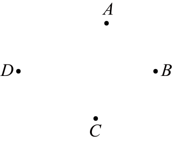
(1)画直线AB；
(2)画射线AD；
(3)连接BD，在线段BD上取点P，使PA+PC的值最小；
(4)数一数此时图中共有几条线段，几条射线？
【答案】(1)见解析
(2)见解析
(3)见解析
(4)8条线段，6条射线
【分析】本题主要考查了画出直线、射线、线段，两点之间线段最短等知识点，熟练掌握直线、射线、线段的定义及“两点之间线段最短”是解题的关键．
（1）根据直线的定义画出图形即可；
（2）根据射线的定义画出图形即可；
（3）根据两点之间线段最短作出点P即可；
（4）根据线段和射线的定义求解即可．
【详解】（1）解：如图，直线AB即为所求作；
（2）解：如图，射线AD即为所求作；
（3）解：如图，点P即为所求作．
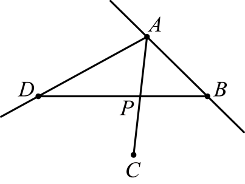
（4）解：图中有线段AD，AB，AP，AC，BD，BP，CP，DP，共有8条；
以A为端点的射线有3条，以B为端点的射线有2条，以D为端点的射线有1条，共6条．
【变式1-1】在日常生活中，手电筒发射出来的光线，类似于 ．（填“折线”或“线段”或“射线”或“直线”）
【答案】射线
【分析】本题主要考查射线的定义，根据直线，射线和线段的区别即可得出答案．
【详解】手电筒可近似看成一个点，所以手电筒发射出来的光线相当于一个从一个端点出发的一条射线，
故答案为：射线．
【变式1-2】如图，下列说法正确的是（ ）

A．图中共有5条线段
B．直线AB与直线AC是指同一条直线
C．射线AB与射线BA是指同一条射线
D．点O在直线AC上
【答案】B
【分析】本题考查了直线、射线、线段的定义，点与直线的位置关系，是基础题，熟记概念是解题的关键．
根据直线、射线、线段的定义和点与直线的位置关系对各小题分析判断即可得解．
【详解】解：A．图中有线段AB、BC、AC，OA，OB，OC，共6条线段，原说法错误，不符合题意；
B．直线AB与直线AC表示的是同一条直线，正确，符合题意；
C．射线AB与射线BA表示的不是同一条射线，原说法错误，不符合题意；
D．点O不在直线AC上，原说法错误，不符合题意．
故选：B．
【变式1-3】（24-25七年级上·吉林长春·阶段练习）如图，有下列结论：
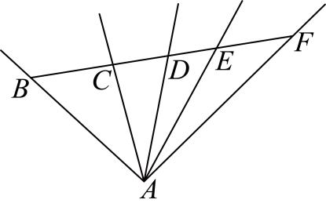
①以点A为端点的射线共有5条； ②以点D为端点的线段共有4条；
③射线CD和射线DC是同一条射线； ④直线BC和直线EF是同一条直线．
以上结论正确的是 ．（填序号）
【答案】①④/④①
【分析】本题考查了直线、射线、线段，根据直线、射线、线段的定义，对结论分析判断即可得解．
【详解】解：①以点A为端点的射线有射线AB，AC，AD，AE，AF，共有5条，故该结论正确，符合题意；
②以点D为端点的线段有线段DE，DC，DF，DB，DA，共有5条，故该结论错误，不符合题意；
③射线CD和射线DC不是是同一条射线，故该结论错误，不符合题意；
④直线BC和直线EF是同一条直线，故该结论正确，符合题意．
综上所述，其中正确的结论是：①④．
故答案为：①④．
【题型2 两点确定一条直线】
【例2】（25-26七年级上·河南郑州·期中）值日生小亮为了把桌子又快又好的摆整齐，总是先把一列的第一张桌子和最后一张桌子摆好，再依次摆中间的桌子，这样做蕴含的数学依据是 ．
【答案】两点确定一条直线
【分析】本题考查了几何公理，掌握“两点确定一条直线”是解题关键．小亮先摆好第一张和最后一张桌子，相当于确定一条直线的两个端点，从而确定一条直线，然后中间的桌子沿这条直线摆放，确保整齐．
【详解】解：根据几何公理，两点确定一条直线．小亮先摆好两端桌子，就确定了桌子的摆放直线，再摆中间桌子，使所有桌子在一条直线上，
故答案为：两点确定一条直线．
【变式2-1】（24-25七年级上·陕西咸阳·阶段练习）值日生每天打扫完卫生后，总是先把每一列最前和最后的课桌摆好，然后再依次摆中间的课桌，很快就能把课桌摆得整整齐齐，他们这样做的道理是（ ）
A．两点确定一条直线 B．两点之间线段最短
C．直线没有端点 D．以上说法都不对
【答案】A
【分析】本题主要考查了直线的性质．根据直线的性质“两点可以确定一条直线”进行解答．
【详解】解：值日生每天打扫完卫生后，总是先把每一列最前和最后的课桌摆好，然后再依次摆中间的课桌，很快就能把课桌摆得整整齐齐，他们这样做的道理是：两点确定一条直线．
故选：A．
【变式2-2】在墙壁上固定一根横放的木条，至少需要钉子的枚数是（ ）
A．1 B．2 C．3 D．无法确定
【答案】B
【分析】本题考查了直线的知识；根据两点确定一条直线即可得到答案．
【详解】解：在墙壁上固定一根横放的木条，则至少需要钉子的枚数是2枚，
故选：B．
【变式2-3】（24-25七年级上·山西吕梁·阶段练习）宣传委员制作黑板报时想要在黑板上画出一条笔直的参照线，由于尺子不够长，她想出了一个办法：在一根长度合适的毛线上涂满粉笔灰，两个同学分别抓住毛线两端，绷紧，靠近黑板要画线的位置，在中间将线一拉再松开，毛线弹回到黑板上，这样黑板上就出现了一条笔直的“粉笔灰线”，这种画法的数学依据是 ．
【答案】两点确定一条直线
【分析】本题主要考查了直线的性质，
根据学生的做法，思考直线的性质解答即可.
【详解】解：这种画法的数学依据是“两点确定一条直线”.
故答案为：两点确定一条直线.
【题型3 两点之间线段最短】
【例3】（24-25七年级上·福建福州·期末）下列三个生活生产现象中，可依据“两点之间，线段最短”进行解释的现象有 （填序号）：
①用两个钉子，就可以把一根木条固定在墙上；
②植树时，只要定出两棵树的位置，就能确定同一行所在的直线；
③把弯曲的公路改直，能缩短路程．
【答案】③
【分析】本题主要考查了两点之间，线段最短以及两点确定一条直线．根据两点之间，线段最短以及两点确定一条直线，逐项判断，即可求解．
【详解】解：①用两个钉子，就可以把一根木条固定在墙上，依据“两点确定一条直线”；
②植树时，只要定出两棵树的位置，就能确定同一行所在的直线，依据“两点确定一条直线”；
③把弯曲的公路改直，能缩短路程，依据“两点之间，线段最短”．
故答案为：③
【变式3-1】如图，为抄近路践踏草坪是一种不文明现象，请你用数学知识解释出现这一现象的原因是（ ）
A．两点确定一条直线 B．两点之间，线段最短
C．直线比线段短 D．对角线最短
【答案】B
【分析】本题考查了线段的性质，熟记两点之间、线段最短是解题的关键．
根据线段的性质即可解答．
【详解】解：为抄近路践踏草坪是一种不文明现象，是因为两点之间线段最短．
故选：B．
【变式3-2】（24-25七年级上·辽宁铁岭·期末）如图，从A地到B地有a，b，c三条道路，人们通常会选择距离最短的道路b，这样做依据的数学原理是（ ）
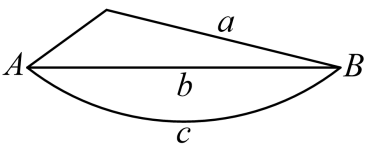
A．点动成线 B．两点确定一条直线
C．两点之间，线段最短 D．线段中点的定义
【答案】C
【分析】根据两点之间线段最短解答即可．
本题考查了两点之间线段最短，熟练掌握性质是解题的关键．
【详解】解：根据两点之间线段最短，得C正确；
故选：C．
【变式3-3】（25-26八年级上·全国·课后作业）如图，田亮同学用剪刀沿直线将一片平整的树叶剪掉一部分，发现剩下树叶的周长比原树叶的周长要小，能正确解释这一现象的数学知识是 ．

【答案】两点之间线段最短
【分析】本题主要考查了线段的性质，掌握两点之间线段最短是解题的关键．
根据两点之间线段最短即可解答．
【详解】解：田亮同学用剪刀沿直线将一片平整的树叶剪掉一部分，发现剩下树叶的周长比原树叶的周长要小，能正确解释这一现象的数学知识是两点之间，线段最短．
故答案为：两点之间线段最短．
【题型4 两点之间的距离】
【例4】（25-26七年级上·河北唐山·期中）如图，A、B、C是一条公路上的三个村庄，A、B间的路程为60km，A、C间的路程为40km、现要在A、B之间建一个车站P，若要使车站到三个村庄的路程之和最小，则车站应建在 ．
【答案】点C处
【分析】本题主要考查了两点之间的距离，
设P，C间的路程为xkm，再分类讨论，当点P在点C左侧时，当点P在点C右侧时，根据两点之间的距离解答即可.
【详解】解：设P，C间的路程为xkm，当点P在点C左侧时，
车站到三个村庄的路程为(40−x)+x+(20+x)=(x+60)km；
当点P在点C右侧时，
车站到三个村庄的路程为(40+x)+x+(20−x)=(x+60)km；
当点P与点C重合时，车站到三个村庄的距离是60km，
所以当车站建在村庄C处时，车站到三个村庄的距离之和最小.
故答案为：点C处.
【变式4-1】（24-25七年级上·甘肃白银·月考）如果线段AB=3cm，BC=4cm，则A、C两点间的距离是（ ）
A．7cm B．1cm C．7cm或1cm D．无法确定
【答案】D
【分析】本题主要考查两点间的距离，分别当A，B，C三点在一条直线上时，当A，B，C三点不在一条直线上时，两种情况进行分析即可．
【详解】解：当A，B，C三点在一条直线上时，分点C在线段AB的延长线上和在线段BA的延长线上两种情况讨论；
①点C在线段AB的延长线上时，AC=AB+BC=3+4=7cm；
②点C在线段BA的延长线上时，AC=BC−AB=4−3=1cm；
∴A、C两点之间的距离是7cm或1cm ；
当A，B，C三点不在一条直线上时，A，C两点之间的距离有多种可能，不能确定．
故选：D．
【变式4-2】（24-25六年级上·上海普陀·期末）在线段AB的延长线上取一点C，使BC=13AB，如果BC=2cm，那么AC的长是（ ）
A．6cm B．8cm C．213cm D．223cm
【答案】B
【分析】本题主要考查了线段间的数量关系，两点间的距离，熟练掌握两点间的距离计算方法进行计算是解决本题的关键．根据已知条件可计算出AB的长度，根据AC=AB+BC代入计算即可得出答案．
【详解】解：∵BC=13AB，BC=2cm，
∴AB=3BC=6cm，
∵点C在线段AB的延长线上，
∴AC=AB+BC=2+6=8cm．
故选：B．
【变式4-3】（25-26七年级上·河北石家庄·期中）有两根木条，一根AB长为80cm，另一根CD长为130cm，在它们的中点处各有一个小圆孔M、N（圆孔直径忽略不计，M、N抽象成两个点），将它们的一端重合，放置在同一条直线上，此时两根木条的小圆孔之间的距离MN是（ ）
A．105cm B．20cm C．105cm或25cm D．105cm或20cm
【答案】C
【分析】本题主要考查线段两点间的距离，理解题意、分类作出相应图形是解题的关键．
分两种情况讨论：①当A、C或B、D重合且剩余两端点在重合点同侧时；②当B、C或A、D重合，且剩余两端点在重合点两侧时；让分别作出相应图形，并结合图形求解即可．
【详解】解：根据题意，分两种情况讨论：
①当A、C或B、D重合，且剩余两端点在重合点同侧时，

由图可得：MN=CN−AM=12CD−12AB=12×130−12×80=25cm；
②当B、C或A、D重合，且剩余两端点在重合点两侧时，

由图可得：MN=CN+BM=12CD+12AB=12×130+12×80=105cm；
∴两根木条的小圆孔之间的距离MN是105cm或25cm．
故选：C．
【题型5 比较线段的长短】
【例5】（24-25六年级上·上海·阶段练习）用叠合法比较线段AB和线段CD的大小，将线段AB移到线段CD的位置，使端点A与端点C重合，线段AB和线段CD叠合，则若点B ，则AB>CD．
【答案】在线段CD延长线上
【分析】本题考查了线段大小的比较的方法，熟练掌握叠合法比较线段的大小的前提条件和三种情况是解答的关键．
画出图形，根据叠合法比较线段的方法即可求解．
【详解】解：用叠合法比较线段AB和线段CD的大小，将线段AB移到线段CD的位置，使端点A与端点C重合，线段AB和线段CD叠合，则若点B在线段CD延长线上，则AB>CD，
如图：
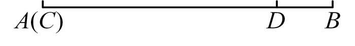
故答案为：在线段CD延长线上．
【变式5-1】比较图中二人的身高，我们有 种方法．一种为直接用卷尺量出，另一种可以让两人站在一块平地上，再量出差．这两种方法都是把身高看成一条 ．
方法（1）是直接量出线段的 ，再作比较．
方法（2）是把两条线段的一端 ，再观察另一个 ．
【答案】 2 线段 长度 重合 端点
【详解】比较图中二人的身高，我们有2种方法．一种为直接用卷尺量出，另一种可以让两人站在一块平地上，再量出差．这两种方法都是把身高看成一条线段.
方法（1）是直接量出线段的长度，再作比较，
方法（2）是把两条线段的一端重合，再观察另一个端点，
故答案为2，线段，长度，重合，端点．
【变式5-2】如图，AC>BD，比较线段AB与线段CD的大小（ ）

A．AB=CD B．AB>CD C．AB<CD D．无法比较
【答案】B
【分析】本题考查了比较线段的长短，比较两条线段长短的方法有两种：度量比较法、重合比较法．本题利用线段的和差将比较线段AB与线段CD转换为比较线段AC与线段BD即可．
【详解】解：因为AB=AC+BC，CD=BD+BC，AC>BD，
所以AB>CD，
故选：B．
【变式5-3】（24-25七年级上·河北承德·期末）一个点在有公共端点的两条线段组成的一条折线上，且把这条折线分成长度相等的两部分，这个点叫作这条折线的“折中点”．如图所示，如果点D是折线A−C−B的“折中点”，请解答以下问题：

(1)当AC>BC时，点D在线段_____上；
(2)当点D与C重合时，直接比较AC，BC的大小．
(3)若E为线段AC的中点，EC=4，CD=3，求BC的长度．
【答案】(1)AC
(2)AC=BC
(3)BC的长度为2或14
【分析】本题考查了线段的加减，理解新定义“折中点”并画出图形是解题关键．
（1）由“折中点”的定义判断即可；
（2）由“折中点”的定义得出AC=BC即可；
（3）分两种情况：点D在AC上，点D在BC上，由“折中点”的定义，列式计算即可．
【详解】（1）解：当AC>BC时，AC+BC2<AC，
由“折中点”的定义可知点D在线段AC上；
（2）解：当点D与点C重合时，根据“折中点”的定义可知AC=BC；
（3）解：∵E为线段AC的中点，EC=4，
∴AC=2EC=8，
当点D在AC上时，如图所示：

∵CD=3，
∴AD=AC−CD=8−3=5，
∴BC=BC+CD−CD=AD−CD=5−3=2；
当点D在BC上时，如图所示：
∵CD=3，
∴BD=AC+CD=8+3=11，
∴BC=BD+CD=11+3=14；
综上分析可知：BC的长度为2或14．
【题型6 作一条线段等于已知线段】
【例6】（24-25七年级上·辽宁盘锦·期末）如图，已知线段a，b，利用尺规作图的方法作一条线段，使它等于2a−b．可以通过以下步骤完成作图：①在线段AB的延长线上截取线段BC=a；②在射线AM上截取线段AB=a；③画一条射线AM；④在线段AC上截取线段CD=b，
正确的作图排序是： ．所求作的线段是线段 ．

【答案】 ③②①④ AD
【分析】本题考查了线段的和差计算，作图——基本作图，根据题意确定正确的作图排序，然后利用两点之间的距离得到AD=AB+BC−CD=a+a−b=2a−b．
【详解】解：正确的作图排序是：③②①④；
AD=AB+BC−CD=a+a−b=2a−b，
故答案为：③②①④；AD．
【变式6-1】（24-25七年级上·甘肃白银·阶段练习）已知线段a，b，用尺规作一条线段c，使得c=a+b；

【答案】图见解析
【分析】本题考查了作线段，熟练掌握作线段的尺规作图是解题关键．先作射线AM，在射线AM上截取AB=a，再在射线BM上截取BC=b，则线段AC即为所求．
【详解】解：如图，线段AC即为所求．
．
【变式6-2】（24-25七年级上·吉林·期末）如图，点P在线段AB上．
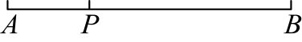
(1)尺规作图：在线段AB上，截取BQ=AP．
(2)尺规作图：延长AB到点D，使BD=AP．
【答案】(1)见解析
(2)见解析
【分析】本题主要考查了线段的尺规作图，熟知相关作图方法是解题的关键．
（1）以点B为圆心，以AP的长为半径画弧，交线段AB于Q，则线段BQ即为所求；
（2）如图所示，以点B为圆心，以AP的长为半径画弧，交线段AB的延长线于D，则线段BD即为所求．
【详解】（1）解：如图所示，即为所求；
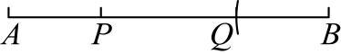
（2）解：如图所示，即为所求．
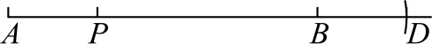
【变式6-3】（24-25七年级上·陕西西安·月考）如图，AB=12，点C、D分别是线段AB上两点（CD>AC，CD>BD），用圆规在线段CD上分别截取CE=AC，DF=BD，若点E与点F恰好重合，则CD的长度为 ．

【答案】6
【分析】本题考查两点间的距离，根据题意得CE=AC，CD=CE+DF，AB=AE+BF，即可得出结论．理解作图过程及点E与点F重合是解题的关键．
【详解】解：∵CE=AC，DF=BD，
∴CE=12AE，DF=12BF，
∵AB=12，点E与点F恰好重合，
∴CE+DF=CD，AE+BF=AB=12，
∴CD=CE+DF
=12AE+12BF
=12AE+BF
=12×12
=6，
∴CD的长度为6．
故答案为：6．
【题型7 线段的中点】
【例7】（25-26七年级上·河北石家庄·期中）已知：如图，AB=12cm，点M是线段AB的中点，点C在线段MB上，且满足MC:CB=2:1．

(1)求线段MC的长；
(2)若点N为线段AB上一点，且MN=3cm，求线段NC的长．
【答案】(1)4cm
(2)1cm或7cm
【分析】（1）根据线段中点的定义求出MB，进而根据比即可求解；
（2）分点N在点M左侧和右侧两种情况，根据线段的和差关系解答即可求解；
本题考查了线段的中点，线段的和差，运用分类讨论思想解答是解题的关键．
【详解】（1）解：∵AB=12cm，点M是线段AB的中点，
∴MB=12AB=6cm，
∵MC:CB=2:1，
∴MC=23MB=4cm；
（2）解：当点N在点M左侧时，如图，
∵MN=3cm，MC=4cm，
∴NC=MN+MC=3+4=7cm；
当点N在点M右侧时，如图，
∵MN=3cm，MC=4cm，
∴NC=MC−MN=4−3=1cm；
综上，线段NC的长为1cm或7cm．
【变式7-1】（25-26七年级上·全国·期末）如图，C是线段AB上一点，D，E分别是线段AC，BC的中点，若AB=16，AD:BE=3:1，则BE的长为（ ）

A．4 B．3 C．2 D．32
【答案】C
【分析】本题考查了线段的和差，以及线段中点的特点，根据D，E分别是线段AC，BC的中点，推出AD+BE=8，再结合AD:BE=3:1求解，即可解题．
【详解】解：因为D，E分别是线段AC，BC的中点，
所以AD=DC，CE=EB，
所以 AD+BE=12AB=12×16=8，
又因为AD:BE=3:1，
所以 BE=8×14=2，
故选：C．
【变式7-2】如图，线段AB=20，点C在线段AB上，点D是AC的中点，E是AB中点，DE=6，则线段AC的长为 ．

【答案】8
【分析】本题考查了与线段中点有关的计算，根据线段中点的定义求出AE=10，根据线段的和差关系求出AD=4，最后根据线段中点的定义求解即可．
【详解】解：∵AB=20，E是AB中点，
∴AE=12AB=10，
∵DE=6，
∴AD=AE−DE=4，
∵点D是AC的中点，
∴AC=2AD=8，
故答案为：8．
【变式7-3】（25-26七年级上·全国·期末）如图，有一根木棒CD放置在数轴上，它的两端C，D分别落在点A，B上，将木棒在数轴上水平移动，当CD的中点移动到点B时，点D 所对应的数为−2，当CD的四等分点（不含中点）移动到点A 时，点 C 所对应的数为−9，则木棒CD的长度为 ．
【答案】4或289
【分析】本题考查了数轴上的点坐标、线段的中点与四等分点的性质，以及一元一次方程的应用，熟练掌握数轴上点的位置关系与线段分割比例，以及通过建立方程求解几何问题是解题的关键．根据木棒移动时中点或四等分点与特定点重合的条件，设木棒长度为8x，利用长度建立方程，分两种情况讨论求解．
【详解】
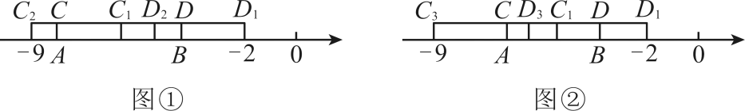
解：如解图，设CD=AB=8x，
由题意可知，CC1=C1D=DD1=4x，
如解图①，当CD的左四等分点移动到点A时，此时CC2=2x，
∵点D1对应的数为−2，点C2对应的数为−9，
∴C2D1=CC2+CD+DD1=2x+8x+4x=−2−−9，解得x=12，
∴CD=8x=4；
如解图②，当CD的右四等分点移动到点A 时，此时CC3=6x，
∵点D1对应的数为−2，点C3对应的数为−9，
∴C3D1=CC3+CD+DD1=6x+8x+4x=−2−−9，解得x=718，
∴CD=8x=289．
综上所述，木棒CD的长度为4或289．
【题型8 线段的和差】
【例8】（25-26七年级上·河北衡水·期中）如图，已知B，C两点把线段AD从左至右依次分成2：4：3三部分，M是AD的中点，BM=5cm，求线段MC的长．
【答案】3cm
【分析】本题主要考查了两点间的距离，先由B、C两点把线段AD分成2：4：3的三部分，根据比例求出AD的长，再根据M是AD的中点，得出MA，求出AC的长，最后由MC=AC−AM求出线段MC的长．
【详解】解：∵B、C两点把线段AD分成2：4：3的三部分，2+4+3=9，
∴AB=29AD，BC=49AD，CD=13AD，
∵M是AD的中点，
∴MA=12AD，
∴BM=MA−AB=518AD=5，即AD=18cm，
∴AM=9cm，AB=4cm，BC=8cm，AC=AB+BC=12cm，
∴MC=AC−AM=12−9=3cm．
【变式8-1】（24-25七年级上·全国·期末）将线段AB延长到C，使BC=12AB，延长BC到D，使CD=12BC，延长CD到E，使DE=12CD，若AE=45cm，则AB= ．

【答案】24cm/24厘米
【分析】本题考查了线段的和差倍关系，一元一次方程的应用，设DE=xcm，则CD=2xcm，BC=4xcm，AB=8xcm，进而由AE=45cm列出方程求出x的值即可求解，正确识图是解题的关键．
【详解】解：设DE=xcm，则CD=2xcm，BC=4xcm，AB=8xcm，
∵AE=45cm，
∴8x+4x+2x+x=45，
解得x=3，
∴AB=8×3=24cm，
故答案为：24cm．
【变式8-2】（24-25七年级上·湖北武汉·月考）如图，点B在线段AC上，且BC=2AB，D,E分别是AB，BC的中点．则下列结论：①AB=13AC；②B是AE的中点；③EC=2BD；④DE=32AB；⑤若DE=5，则图中所有线段之和为50．其中正确的结论有（ ）
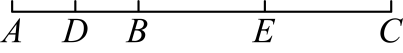
A．2个 B．3个 C．4个 D．5个
【答案】D
【分析】本题考查了线段中点的有关计算，线段的数量，线段的和差计算，根据线段中点的有关计算和线段的和差结合题意可得结论①②③④正确，图中线段总共有10条，分别加一起即可求出结论⑤正确
【详解】解：①、由BC=2AB，AC=AB+BC，得：13AC=AB，故正确；
②、由E是BC的中点，BC=2AB，得BE=AB，则B是AE的中点，故正确；
③、由D，E分别是AB，BC的中点，得：EC=BE=AB=2BD，故正确；
④、由上述结论，得：DE=DB+BE=12AB+AB=32AB，故正确；
⑤、由DE=32AB，DE=5，得到AB=103，又13AC=AB，则AC=10，AD=BD=12AB=53，BE=CE=12BC=2BD=103，
∴AD+AB+AE+AC=53+103+203+10=653，
DB+DE+DC=53+153+253=15，
BE+BC=103+203=10，EC=103，
∴图中所有线段之和为653+15+10+103=50，故正确，
综上所述，正确的结论共有5个，
故选：D
【变式8-3】（24-25七年级上·河北石家庄·期中）【新知理解】
点C在线段AB上，若BC=2AC或AC=2BC，则称点C是线段AB的“优点”，线段AC，BC称作互为“优点”伴侣线段．

例如，图1，线段AB的长度为6，点C在AB上，AC的长度为2，则点C是线段AB的其中一个“优点”．
（1）若点C为图1中线段AB的“优点”，且AC=3AC<BC，则AB=__________；
（2）若点D也是图1中线段AB的“优点”（不同于点C），则AC_______BD（填“>”“ <”或“=”）
【解决问题】
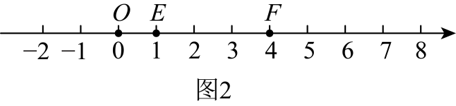
如图2，数轴上有E，F两点，其中E点表示的数为1，F点表示的数为4；
（3）若M点在N点的左侧，且M，N均为线段OF的“优点”，则线段MN的长为____________；
（4）若点G在线段EF的延长线上，且线段EF与GF互为“优点”伴侣线段，则点G表示的数为___________．
【答案】（1）9；（2）=；（3）43；（4）5.5或10
【分析】本题主要查了线段的和与差：
（1）根据“优点”的定义解答，即可求解；
（2）根据“优点”的定义解答，即可求解；
（3）根据“优点”的定义可得OM=13OF=43,FN=13OF=43，即可求解；
（4）根据题意可得EF=3，再由“优点”伴侣线段的定义解答，即可求解．
【详解】解：（1）∵点C为图1中线段AB的“优点”，且AC=3AC<BC，
∴BC=2AC=6，
∴AB=AC+BC=9；
故答案为：9
（2）∵点D也是图1中线段AB的“优点”（不同于点C），
∴AD=2BD，
∴BD=13AB=3，
∴AC=BD；
故答案为：=
（3）∵F点表示的数为4，
∴OF=4，
∵M点在N点的左侧，且M，N均为线段OF的“优点”，
∴OM=13OF=43,FN=13OF=43，
∴MN=OF−OM−FN=43；
故答案为：43
（4）∵E点表示的数为1，F点表示的数为4，
∴EF=3，
∵线段EF与GF互为“优点”伴侣线段，
当EF=2GF时，GF=1.5，
∴点G表示的数为5.5，
当GF=2EF时，GF=6，
∴点G表示的数为10，
综上，点G表示的数为5.5或10．
故答案为：5.5或10
【题型9 角的概念】
【例9】下列关于角的说法正确的个数是（ ）
①角是由两条射线组成的图形；②角的边越长，角越大； ③在角一边延长线上取一点D；④角可以看作由一条射线绕着它的端点旋转而形成的图形．
A．1个 B．2个 C．3个 D．4个
【答案】A
【分析】本题主要考查了角的定义，根据角的概念对各选项分析判断后利用排除法求解，熟练掌握有公共端点的两条射线组成的图形叫做角是解决此题的关键．
【详解】有公共端点的两条射线组成的图形叫做角，故①错误，不符合题意；
角的大小与开口大小有关，角的边是射线，没有长短之分，故②错误，不符合题意；
角的边是射线，不能延长，故③错误，不符合题意；
角可以看作由一条射线绕着它的端点旋转而形成的图形，④正确，符合题意，
∴只有④一个选项正确，
故选：A．
【变式9-1】把一个20°的角放在10倍的放大镜下看，这个角是 度．
【答案】20
【分析】角在放大镜下大小不变，据此解答．
【详解】解：把一个20°的角放在10倍的放大镜下看，这个角大小不变，还是20°，
故答案为：20．
【点睛】本题考查了角的概念，熟知角的特性是关键．
【变式9-2】（1）图中可以用一个大写字母表示的角有 ；
（2）以A为顶点的角有 ；
（3）图中一共 个角（不包括平角）．

【答案】 ∠B，∠C ∠BAD，∠DAC，∠BAC 7
【分析】本题主要考查了角的表示方法，角的个数问题：
（1）顶点处只有一个角的可以用一个大写字母表示即可；
（2）以A为顶点的角有三个，逐一写出即可；
（3）把图中所有角（不包括平角）写出数一数即可．
【详解】解：（1）图中可以用一个大写字母表示的角有∠B，∠C；
故答案为：∠B，∠C．
（2）以A为顶点的角有∠BAD，∠DAC，∠BAC；
故答案为：∠BAD，∠DAC，∠BAC．
（3）图中的角为：∠B，∠C，∠BAD，∠DAC，∠BAC，∠BDA，∠ADC共7个．
故答案为：7．
【变式9-3】在锐角∠AOB内部，画出1条射线，可以画出3个锐角；画出2条不同的射线，可以画出6个锐角；画出3条不同的射线，可以画出10个锐角……照此规律，画2020条不同的射线，可以画出 个锐角．

【答案】2043231
【分析】考查了角的概念，解决该题的关键是找到规律，从一个角的内部引出n条射线所得到的锐角的个数是12n+1n+2，分别找出各图形中锐角的个数，找出规律解题．
【详解】解：∵在锐角∠AOB内部，画1条射线，可得1+2=3个锐角，
在锐角∠AOB内部，画2条射线，可得1+2+3=6个锐角，
在锐角∠AOB内部，画3条射线，可得1+2+3+4=10个锐角，
……
∴从一个角的内部引出n条射线所得到的锐角的个数是
1+2+3+⋅⋅⋅+n+1=12n+1n+2,
∴画2020条不同的射线，可得锐角12×2020+12020+2=2043231
故答案为：2043231．
【题型10 钟面角】
【例10】（24-25七年级上·吉林·期末）上午8:30时，钟表的时针和分针所成锐角的度数是（ ）
A．60° B．45° C．75° D．90°
【答案】C
【分析】本题考查了钟表里的旋转角的问题，钟表表盘被分成12大格，每一大格又被分为5小格，故表盘共被分成60小格，每一小格所对角的度数为6°．分针转动一圈，时间为60分钟，则时针转1大格，即时针转动30°．也就是说，分针转动360°时，时针才转动30°，即分针每转动1°，时针才转动（112）度，逆过来同理．
【详解】解：∵8:30分时，时针指向8与9之间，分针指向6．钟表12个数字，每相邻两个数字之间的夹角为30°，
∴8:30时分针与时针的夹角是2×30°+15°=75°．
故选：C．
【变式10-1】（24-25七年级上·甘肃武威·期末）从下午13:00到当天下午13:50，时钟的分针转过的角度为 度．
【答案】300
【分析】本题考查了钟表中角度计算，由下午13:00到当天下午13:50，分针用50分钟时间，从而可得分针旋转了6°×50=300°，正确理解在钟表问题中常利用时针与分针转动的度数关系：分针每分钟转动6°，时针每小时转动30°是解题的关键．
【详解】解：∵钟表问题中常利用时针与分针转动的度数关系：分针每分钟转动6°，
∴下午13:00到当天下午13:50，分针用50分钟时间，
∴分针旋转了6°×50=300°，
故答案为：300．
【变式10-2】当一个挂钟走到4时12分的时候，时针与分针所成的较小的夹角是 度．
【答案】54
【分析】本题考查了钟面角．根据钟表有12个大格，每个大格是30°，时间为4时12分，分针指在2到3之间，时针在4到5之间，从而可以解答本题．
【详解】解：4时12分，时针从12点位置起旋转过的角度为：
30∘×4+1260×30∘=126∘，
分针从12点位置起旋转过的角度为6∘×12=72∘，
所以4时12分时，时针与分针的夹角为126∘−72∘=54∘．
故答案为：54．
【变式10-3】如图，在一个圆形时钟的表面上，OA表示时针，OB表示分针 (O为两针的交点即旋转中心)． 下午3点时，OA与OB成直角．
(1)时针1小时转过的角度为 °，分针 1分钟转过的角度为 °；
(2)在下午3点至4点之间，从下午3点开始，经过多少分钟，时针与分针成60°角？
【答案】(1)30，6
(2)经过6011 或30011分钟，时针与分针成60°角
【分析】此题考查了一元一次方程的应用．
（1）根据时针12小时转过一周，分针60分钟转过一周，据此进行解答即可；
（2）分两种情况：分针在时针上方和分针在时针下方，分别进行求解即可．
【详解】（1）解：时针1小时转过的角度为360°÷12=30°，
分针1分钟转过的角度为360°÷60=6°；
故答案为：30，6
（2）设在下午3点至 4点之间，从下午3点开始，经过x分钟，时针与分针成60°角．
①当分针在时针上方时， 由题意得：
3+x60×30−6x=60， (或6x−30x60=90−60）
解得：x=6011；
②当分针在时针下方时，由题意得：
6x−3+x60×30=60， (或6x−30x60=90+60）
解得：x=30011
答：经过6011或30011分钟，时针与分针成60°角．
【题型11 度分秒的换算】
【例11】（24-25七年级上·河北邯郸·期中）计算：
(1)131°28′−32′15″；
(2)58°38′27″+47°42′40″．
【答案】(1)130°55′45″
(2)106°21′7″
【分析】此题考查了角度的和差计算，度分秒的换算．
（1）根据度分秒的计算方法进行计算即可；
（2）根据度分秒的计算方法进行计算即可．
【详解】（1）解：131°28′−32′15″=130°87′60″−32′15″=130°55′45″
（2）58°38′27″+47°42′40″=105°80′67″=106°21′7″
【变式11-1】（24-25七年级上·广东东莞·期末）用度、分、秒表示91.34°为（ ）
A．91°20′24″ B．91°34′ C．91°20′4″ D．91°3′4″
【答案】A
【分析】本题主要考查了度分秒的换算，掌握换算公式是解题的关键．根据1度等于60分，1分等于60秒，由大单位转换成小单位乘以60，按此转化即可．
【详解】解：∵1°=60′
∴0.34°=20.4′
∴0.4′=24″
∴91.34°=91°20′24″
故选：A
【变式11-2】（25-26七年级上·河南濮阳·期中）若∠1=33°33',∠2=33.33°,∠3=33.55°，则下列结论正确的是（ ）
A．∠1=∠2 B．∠2=∠3 C．∠1<∠3 D．∠1=∠3
【答案】D
【分析】本题主要考查度分秒的换算，熟练掌握度分秒的换算规则是解题的关键．将∠1进行换算，即可得到答案．
【详解】解：∵∠1=33°33′=33.55°，∠2=33.33°，∠3=33.55°，
∴∠1=∠3>∠2，
故选：D．
【变式11-3】如图，某种齿轮每相邻两齿中心线间的夹角都相等，如果是一个15个齿的齿轮，则这个夹角的度数是24°；如果是一个22个齿的齿轮，则这个夹角的度数约为 ．（精确到分）

【答案】16°22′
【分析】本题考查了角在实际生活中的运用，理解所有齿所对应的中心角的和组成一个周角是解题关键．理解题意，得24°×15=360°，则360°÷22≈16.36°≈16°22′，即可计算22个齿的齿轮每相邻两齿中心线间的夹角．
【详解】解：∵某种齿轮每相邻两齿中心线间的夹角都相等，如果是一个15个齿的齿轮，则这个夹角的度数是24°
∴24°×15=360°，
∵一个齿轮有22个齿，每相邻两齿中心线间的夹角都相等，
∴这个夹角的度数为360°÷22≈16.36°≈16°22′
∴如果是22个齿的齿轮，这个夹角约为16°22′．
故答案为：16°22′
【题型12 方向角】
【例12】（24-25六年级上·上海·阶段练习）北偏西20∘和南偏东80∘所成的角是 ．
【答案】120°
【分析】本题考查了方向角和角度计算， 解题关键在于理解方向角的定义．通过方向角的定义和几何分析，确定两方向在坐标系中的位置，进而计算它们的夹角即可，
【详解】解：如图，∠AOB=20°，∠COD=80°，∠AOM=90°，
∠MOD=90°−∠COD=90°−80°=10°,
∴∠BOD=∠BOA+∠AOM+∠MOD=20°+90°+10°=120°．
故答案为：120°．
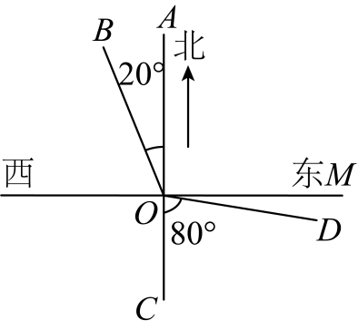
【变式12-1】（25-26六年级上·黑龙江哈尔滨·阶段练习）如图中所示，只用方向和角度描述，学校在广场的 ．
【答案】北偏东30°
【分析】本题考查了方位角，根据方位角的表示：学校在广场的北偏东30°，即可作答．
【详解】解：观察图中信息，得出学校在广场的北偏东30°，
故答案为：北偏东30°．
【变式12-2】（25-26六年级上·黑龙江哈尔滨·期中）小明面向北偏东40°方向站好，当他向左转90°时，他面向（ ）方向．
A．南偏东50° B．南偏东50° C．北偏西40° D．北偏西50°
【答案】D
【分析】本题考查方向角的有关计算，根据题意，得到小明向左转90°，即逆时针转90°，进行求解即可．
【详解】解：由题意，小明向左转90°，即逆时针转90°，
故左转后，他面向的是北偏西90°−40°=50°；
故选：D．
【变式12-3】（25-26六年级上·黑龙江绥化·阶段练习）一架飞机从某机场向北偏东50°方向飞行了1200千米，原路返回时要向（ ）方向飞行1200千米．
A．南偏西40° B．西偏南40° C．东偏北40° D．北偏东40°
【答案】B
【分析】本题考查了方向角，根据方向的相对性，原路返回的方向与去时的方向相反，即北偏东的相反方向为南偏西，但需注意角度的转换，北偏东50°的相反方向可转换为西偏南40°，掌握知识点的应用是解题的关键．
【详解】解：飞机从机场向北偏东50°方向飞行，返回时方向相反，北偏东50°的相反方向为南偏西50°，即西偏南40°，
因此，原路返回时应向西偏南40°方向飞行1200千米，
故选：B．
【题型13 角的大小比较】
【例13】对于如图所示的各个角，用“>”、“<”、“=”填空：

(1)∠AOB___________∠AOC；
(2)∠DOB___________∠BOC；
(3)∠BOC___________∠AOD；
(4)∠AOD___________∠BOD．
【答案】(1)<
(2)>
(3)<
(4)>
【分析】本题主要考查了角的大小比较，根据图形和角之间的关系即可得到答案．
【详解】（1）解：由题意得，∠AOB<∠AOC，
故答案为：<；
（2）由题意得，∠DOB>∠BOC，
故答案为：>；
（3）由题意得，∠BOC<∠AOD，
故答案为：<；
（4）由题意得，∠AOD>∠BOD，
故答案为：>．
【变式13-1】（25-26七年级上·河北唐山·期中）如图，利用带60°角的三角板比较∠A和∠B的大小，下列结论正确的是（ ）

A．∠A>∠B B．∠A=∠B C．∠A<∠B D．无法判断
【答案】A
【分析】本题主要考查角的大小比较，掌握利用中间角比较角的大小是关键． 由图知∠A>60°，∠B<60°，故可比较大小．
【详解】解：∵图中为带60°角的三角板，
∴ ∠A>60°，∠B<60°，
∴∠A>∠B．
故选：A．
【变式13-2】根据图形，写出OC与∠AOB的位置关系，并用数学符号写出∠AOB与∠COB的大小关系．
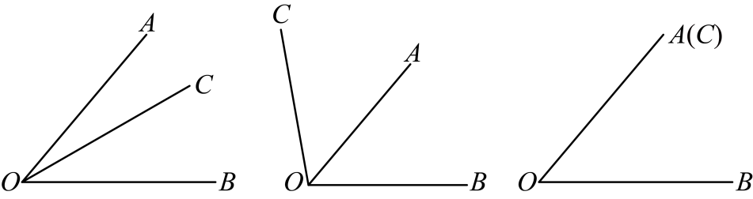
【答案】OC在∠AOB内部，∠AOB>∠COB，OC在∠AOB外部，∠AOB<∠COB，OC与∠AOB的边射线OA重合，∠AOB=∠COB
【分析】根据图形及角度大小关系即可判断．
【详解】如图①，OC在∠AOB内部，故∠AOB>∠COB；
如图②，OC在∠AOB外部，故∠AOB<∠COB；
如图③，OC与∠AOB的边射线OA重合，∠AOB=∠COB．
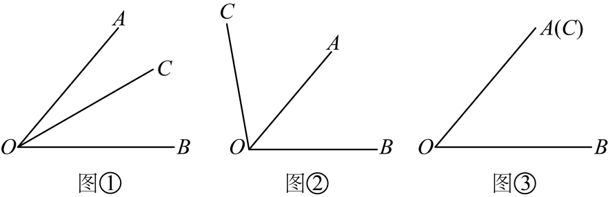
【点睛】此题主要考查角度之间的关系，解题的关键是根据图形数形结合进行求解．
【变式13-3】如图所示表示两块三角板．

（1）用叠合法比较∠1，∠α，∠2的大小；
（2）量出图中各角的度数，并把图中的6个角从小到大排列，然后用“＜”或“＝”连接．
【答案】（1）∠2＝∠1＞∠α；（2）∠α＜∠1＝∠2＜∠β＜∠3＝∠γ
【分析】1）将角的顶点重合，角的两边重合，看第三边的位置关系，分类判断即可；
（2）用量角器测量比较即可．
【详解】解：（1）如图所示，把两块三角板叠在一起，可得∠1＞∠α，用同样的方法，
可得∠α＜∠2．所以∠2＝∠1＞∠α．
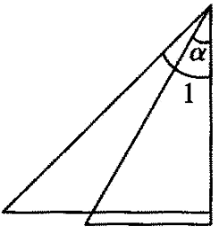
（2）用量角器量出图中各个角的度数，分别是∠1＝∠2＝45°，∠3＝90°，∠α＝30°，∠β＝60°，∠γ＝90°，
把它们从小到大排列，有∠α＜∠1＝∠2＜∠β＜∠3＝∠γ．
【点睛】本题考查了了角的大小比较的方法，熟练掌握叠合法和度量法两种：①先将两个角的顶点与顶点重合，一条边与一条边重合再比较．②先量出每个角的度数，然后按它们的度数来比较，是解题的关键．
【题型14 角的平分线】
【例14】（25-26七年级上·河北唐山·期中）如图，已知∠AOC：∠BOC＝1∶3，OD平分∠AOB，且∠COD=36°，求∠AOB的值．

【答案】144°
【分析】本题考查了角平分线的定义及角的和差倍分，关键是找到角之间的关系；
由∠AOC：∠BOC＝1∶3，OD平分∠AOB，可得∠AOB=4∠COD，答案可得．
【详解】解：∵∠AOC：∠BOC=1：3，OD平分∠AOB，
∴∠AOC=14∠AOB，∠AOD=12∠AOB，
∴∠COD=∠AOD−∠AOC=12∠AOB−14∠AOB=14∠AOB，
∵∠COD=36°，
∴∠AOB=4∠COD=4×36°=144°．
【变式14-1】（25-26七年级上·河北唐山·期中）如图，∠AOB=75∘，∠BOC=15∘，OD是∠AOC的平分线，则∠COD的度数为 °
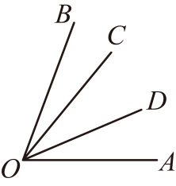
【答案】30
【分析】本题主要考查了角的和差，角平分线定义，
先求出∠AOC，再根据角平分线定义求出∠COD即可．
【详解】解：因为∠AOB=75°，∠BOC=15°，
所以∠AOC=∠AOB−∠BOC=75°−15°=60°.
因为OD是∠AOC的平分线，
所以∠COD=12∠AOC=30°．
故答案为：30．
【变式14-2】（25-26七年级上·全国·课后作业）如图，∠AOD=120°，OC平分∠AOD，OB平分∠AOC，下列结论：①∠AOC=∠COD；②∠COD=2∠BOC；③∠AOB与∠COD可以拼成一个直角；④∠AOC与∠AOD可以拼成一个平角，正确的个数有（ ）

A．1个 B．2个 C．3个 D．4个
【答案】D
【分析】此题主要考查角平分线的定义，角的和差计算，解题的关键是熟知角平分线的定义．
根据角平分线的定义求出各角度数，再判断各选项即可．
【详解】∵∠AOD=120°，OC平分∠AOD，
∴∠AOC=∠DOC=12×120°=60°
∵OB平分∠AOC．
∴∠AOB=∠BOC=12×60°=30°，
∴∠AOB+∠COD=30°+60°=90°，∠AOC+∠AOD=60°+120°=180°，
∴①∠AOC=∠COD，正确；
②∠COD=2∠BOC，正确；
③∠AOB与∠COD可以拼成一个直角，正确；
④∠AOC与∠AOD可以拼成一个平角，正确，
故选：D．
【变式14-3】（25-26七年级上·全国·单元测试）已知∠AOB=84°，OM，ON分别是∠BOC和∠AOC的平分线．
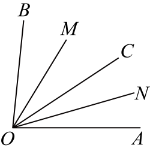
(1)当射线OC在∠AOB内部时，求∠MON的度数；∠MON的值随着OC在∠AOB内转动是否变化，为什么？
(2)当OC在∠AOB外部时，∠MON的值是否会随着OC的转变而变化？简单说明理由．
【答案】(1)∠MON=42°；∠MON的值随着OC在∠AOB内转动不会发生变化，理由见解析；
(2)∠MON的值不会随着OC的转变而变化，理由见解析．
【分析】本题考查了角平分线定义，角的和差关系．
（1）由OM，ON分别是∠BOC和∠AOC的平分线，可得∠MON=12∠AOB,从而可得答案；根据∠MON=12∠AOB可得：∠AOB不变，∠MON的大小不变；
（2）据∠MON=12∠AOB可得：∠AOB不变，∠MON的大小不变．
【详解】（1）解：∠MON的值随着OC在∠AOB内转动不会发生变化，理由如下：
∵ OM，ON分别是∠BOC和∠AOC的平分线，
∴∠MOC=12∠BOC,∠NOC=12∠AOC，
∴∠MON=∠MOC+∠NOC=12∠BOC+∠AOC=12∠AOB，
∵∠AOB=84°，
∴∠MON=12×84°=42°．
即∠MON的值随着OC在∠AOB内转动不会发生变化；
（2）解：∠MON的值不会随着OC的转变而变化，理由如下：
如图：
∵ OM，ON分别是∠BOC和∠AOC的平分线，
∴∠MOC=∠MOB=12∠BOC,∠NOC=12∠AOC，
∴∠MON=∠NOC−∠MOC=12∠AOC−∠BOC=12∠AOB，
∵∠AOB=84°，
∴∠MON=12×84°=42°．
即∠MON的值不会随着OC的转变而变化．
【题型15 作一个角等于已知角】
【例15】（25-26七年级上·辽宁沈阳·期中）如图，∠BAC=80°，∠CAD=20°，以A为圆心，任意长为半径画弧，分别交射线AB、AD、AC于E、F、G，以G为圆心，以EF为半径画弧，交前弧于点H，过H作射线AM，则∠BAM=
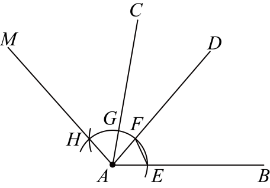
【答案】140°/140度
【分析】本题考查的知识点是尺规作等角的方法及角的和差运算；通过尺规作图得∠HAG=∠EAF，再利用已知角的度数，结合角的和差关系求出所求角的度数．
【详解】解：由尺规作图可知，∠HAG=∠EAF(以A为圆心画弧，再以G为圆心、EF长为半径画弧得到点H，这种作图方法是作角平分线的方法)，
∵∠BAC=80°，∠CAD=20°，
∴∠BAD=∠BAC−∠CAD=80°−20°=60°，
即∠EAF=60°，
∵∠HAG=∠EAF，
∴∠HAG=∠EAF=60°，
∴∠BAM=∠HAG+∠BAC=60°+80°=140°．
故答案为：140°．
【变式15-1】（25-26八年级上·内蒙古呼和浩特·阶段练习）如图，已知∠ABC，请用尺规作图在下方作出∠A′B′C′，使得∠ABC=A′B′C′（在图上保留作图痕迹）．

【答案】见详解
【分析】本题考查了角平分线的尺规作图，先画出射线B′C′，以点B为圆心，适当的长度为半径画弧分别交∠ABC的两边于点E,F，然后以点B′为圆心，以BE的长度为半径画弧，交射线B′C′于点E′，再以点E′为圆心，以EF的长度为半径画弧，交前弧于点F′，连接B'F'，则A'在射线B'F'上，即可作答．
【详解】解：∠A′B′C′如图所示：
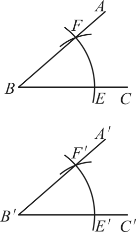
【变式15-2】（24-25七年级上·内蒙古巴彦淖尔·期末）如图，已知∠1，∠2∠1>∠2，求作∠ABC，使∠ABC=∠1−∠2（用尺规作图，不写作法，保留作图痕迹）．
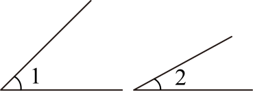
【答案】见解析
【分析】本题主要考查了用尺规作一个角等于已知角，先作∠ABD=∠1，再在∠ABD内部作∠CBD=∠2，则∠ABC即为所求．
【详解】解：如图，∠ABC即为所求的角．
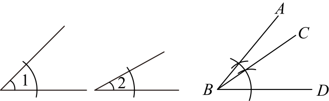
【变式15-3】（24-25七年级上·河北邯郸·期末）如图，由∠AOB尺规作∠AOC．若∠AOC=48°36′，OD平分∠BOC，则∠BOD= 度．

【答案】36.45
【分析】本题考查的是作一个角等于已知角的2倍，角的和差运算，角平分线的定义，先证明∠AOC=2∠AOB，求解∠BOC=∠AOC+∠AOB=48°36′+24°18′=72°54′，再结合角平分线的定义进一步求解即可.
【详解】解：如图，
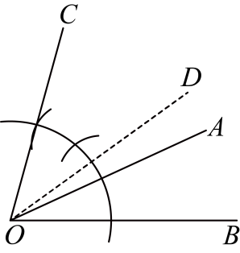
由作图可得：∠AOC=2∠AOB，
∵∠AOC=48°36′，
∴∠AOB=12×48°36′=24°18′，
∴∠BOC=∠AOC+∠AOB=48°36′+24°18′=72°54′，
∵OD平分∠BOC，
∴∠BOD=12∠BOC=36°27′=36.45°，
故答案为：36.45
【题型16 角的计算】
【例16】（25-26七年级上·河北石家庄·期中）如图，在∠AOC中，∠AOB是直角，∠BOC=70∘，射线OE平分∠AOC，射线OF平分∠BOC，则∠EOF的度数为 ．
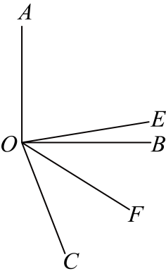
【答案】45°
【分析】本题主要考查了角的和差、角的平分线等知识点，弄清角之间的关系是解题的关键．
由直角的定义、角的和差可得∠AOC=160°，再根据角平分线的定义可得∠COE=80°、∠BOF=35°，再求得∠BOE=10°，最后根据角的和差即可解答．
【详解】解：∵∠AOB是直角，
∴∠AOB=90°，
∴∠AOC=∠AOB+∠BOC=90°+70°=160°，
∵射线OE平分∠AOC，
∴∠COE=12∠AOC=80°，
∴∠BOE=∠COE−∠BOC=10°，
∵射线OF平分∠BOC，
∴∠BOF=12∠BOC=35°，
∴∠EOF=∠BOE+∠BOF=45°．
故答案为：45°．
【变式16-1】如图，∠AOC与∠BOC的度数比为4:2，OD平分∠AOB，若∠COD=10°，则∠AOB的度数是 ．

【答案】60°/60度
【分析】本题考查了角平分线的定义、角的运算，设∠AOC=4x，∠BOC=2x，所以∠AOB=∠AOC+∠BOC=6x，由角平分线定义可得∠AOD=12∠AOB=3x，则∠COD=∠AOC−∠AOD=3x−2x=10°，然后求出x的值即可，利用方程思想解决角度计算是解题的关键．
【详解】解：∵∠AOC与∠BOC的度数比为4:2，
∴设∠AOC=4x，∠BOC=2x，
∴∠AOB=∠AOC+∠BOC=6x，
∵OD平分∠AOB，
∴∠AOD=12∠AOB=3x，
∴∠COD=∠AOC−∠AOD=3x−2x=10°，解得：x=10°，
∴∠AOB=6x=6×10°=60°，
故答案为：60°．
【变式16-2】如图，已知∠AOC=∠COD=∠DOE=∠EOB=α，若以OA，OB，OC，OD，OE为边的各角之和等于380°，则∠AOB= ．
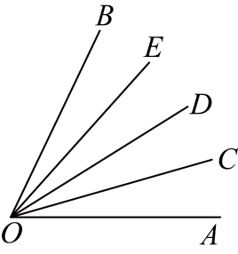
【答案】76°
【分析】此题主要考查了角的计算，理解题意，准确识图，熟练掌握角的计算是解决问题的关键．以OA为一边的角有：∠AOC=α，∠AOD=2α，∠AOE=3α，∠AOB=4α，以OB为一边的角有：∠BOE=α，∠BOD=2α，∠BOC=3α，以OC为一边的角有：∠COD=α，∠COE=2α，以OE为一边的角有：∠EOD=α，再根据以OA，OB，OC，OD，OE为边的各角之和等于380°，列式求解即可．
【详解】解：以OA为一边的角有：∠AOC=α，∠AOD=2α，∠AOE=3α，∠AOB=4α，
以OB为一边的角有：∠BOE=α，∠BOD=2α，∠BOC=3α，
以OC为一边的角有：∠COD=α，∠COE=2α，
以OE为一边的角有：∠EOD=α，
又∵以OA，OB，OC，OD，OE为边的各角之和等于380°，
∴α+2α+3α+4α+α+2α+3α+α+2α+α=380°，
解得：α=19°，
∴∠AOB=4α=4×19°=76°．
故答案为：76°．
【变式16-3】（25-26七年级上·全国·课后作业）综合与探究
问题情境
数学课上，老师和同学们以具有公共顶点的两个直角为背景，探究有关角的问题．如图1，∠AOB=∠COD=90°，射线OC在∠AOB的内部，射线OB在∠COD的内部．

特例分析
（1）若∠BOC=50°，则∠AOD的度数为 ．
规律探究
（2）若∠BOC=α，求∠AOD的度数．
拓展延伸
（3）在图1的基础上，作射线OE平分∠AOC，OF平分∠BOD，得到图2．
①若∠BOC=40°，则∠EOF的度数为 ．
②若∠BOC=β，求∠EOF的度数．
【答案】（1）130°；（2）180°−α；（3）①90°；②90°
【分析】本题考查了余角和补角，角平分线的定义，根据题目的已知条件并结合图形进行分析是解题的关键．
（1）先求出∠AOC的度数，再利用∠AOD=∠AOC+∠DOC求出∠AOD的度数即可；
（2）同（1）计算即可；
（3）①先分别求出∠AOC，∠BOD的度数，进一步求出∠COE，∠BOF的度数，再利用∠EOF=∠BOF+∠BOC+∠COE，求解即可；
②同法①，即可得出结果．
【详解】（1）解：∵∠AOB=90°，∠BOC=50°，
∴∠AOC=∠AOB−∠BOC=40°，
∵∠COD=90°，
∴∠AOD=∠AOC+∠DOC=40°+90°=130°，
故答案为：130°；
（2）解：∵∠AOB=90°，∠BOC=α，
∴∠AOC=∠AOB−∠BOC=90°−α，
∵∠COD=90°，
∴∠AOD=∠AOC+∠DOC=90°−α+90°=180°−α；
（3）解：①∵∠AOB=∠COD=90°，∠BOC=40°，
∴∠AOC=∠AOB−∠BOC=50°，
∠BOD=∠COD−∠BOC=50°，
∵OE平分∠AOC，OF平分∠BOD，
∴∠COE=12∠AOC=25°， ∠BOF=12∠BOD=25°，
∴∠EOF=∠BOF+∠BOC+∠COE=25°+40°+25°=90°，
故答案为：90°；
②∵∠AOB=∠COD=90°，∠BOC=β，
∴∠AOC=∠AOB−∠BOC=90°−β，∠BOD=∠COD−∠BOC=90°−β，
∵OE平分∠AOC，OF平分∠BOD，
∴∠COE=12∠AOC=45°−12β， ∠BOF=12∠BOD=45°−12β，
∴∠EOF=∠BOF+∠BOC+∠COE=45°−12β+β+45°−12β=90°．
【题型17 多边形】
【例17】（24-25七年级下·四川巴中·期末）如果过某多边形的一个顶点的对角线有9条，则该多边形对角线一共有 条．
【答案】54
【分析】本题考查了多边形的对角线公式，熟记从每一个顶点出发可以作的对角线的条数为n−3是解题的关键．
根据从每一个顶点出发可以作的对角线的总条数为n−3计算即可得到该多边形的边数（或顶角数），然后由n边形的对角线总条数公式为n−3n2进行解答．
【详解】解：：∵过一个多边形的一个顶点的对角线有9条，
∴多边形的边数为9+3=12，
∴这个多边形是十二边形．
∴该多边形对角线一共有：12−3×122=54(条)，
故答案为：54．
【变式17-1】下列图形中，属于多边形的是（ ）
A． B．
C． D．
【答案】C
【分析】根据多边形的定义，即可求解．
【详解】解：A、不属于多边形，故本选项不符合题意；
B、不属于多边形，故本选项不符合题意；
C、属于多边形，故本选项符合题意；
D、不属于多边形，故本选项不符合题意；
故选：C．
【点睛】本题主要考查了多边形，熟练掌握由nn≥3条线段首尾顺次连接而成的封闭图形是多边形是解题的关键．
【变式17-2】一个四边形切掉一个角后变成（ ）
A．四边形 B．五边形
C．四边形或五边形 D．三角形或四边形或五边形
【答案】D
【分析】一个四边形截去一个角是指可以截去两条边，而新增一条边，得到三角形；也可以截去一条边，而新增一条边，得到四边形；也可以直接新增一条边，变为五边形．可动手画一画，具体操作一下．
【详解】如图可知，一个四边形截去一个角后变成三角形或四边形或五边形．
故选D．
【点睛】此类问题，动手画一画准确性高，注意不要漏掉情况．
【变式17-3】如图，从一个多边形的某个顶点出发，分别连接这个顶点与其余各顶点，可以把这个多边形分割成若干个三角形．
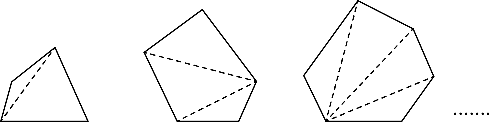
（1）根据以上多边形的边数与分割成三角形的个数之间的规律，猜测n(n≥4)边形可以分割三角形的个数是 ；
（2）若已知一个多边形，按以上方法可分割成120个小三角形，则多边形的边数n= ．
【答案】 n−2 122
【分析】本题主要考查多边形的性质、图形的规律等知识，发现从n边形的一个顶点出发，分别连接这个点与其余各顶点，形成的三角形个数为n−2成为解题的关键．
（1）由所给图形得到分成的三角形的个数和多边形的边数的关系的规律即可解答；
（2）根据（1）得到的规律求得n的值即可．
【详解】解：（1）由图中可以看出：
四边形被分为4−2=2个三角形，
五边形被分为5−2=3个三角形，
六边形被分为6−2=4个三角形，
…，
n边形被分为(n−2)个三角形．
故本题答案为：n−2．
（2）当n−2=120时，n=122．
故答案为：122．
【题型18 圆的认识】
【例18】下列说法正确的是（ ）
A．圆上任意两点间的部分叫作圆弧
B．圆上任意两点间的线段叫作弧
C．圆上任意两点间的线段长度叫作弧
D．任意两点间的部分叫作弧
【答案】A
【分析】此题考查了圆弧的认识．根据：圆上任意两点间的部分叫做圆弧，逐一判断即可．
【详解】解：圆上任意两点间的部分叫做圆弧，圆上任意两点间的线段叫作弦．
观察四个选项，只有选项A说法正确，
故选：A．
【变式18-1】（24-25九年级上·甘肃张掖·期末）如图所示，点P是⊙O上的任意一点，则以点P为端点的半径（ ）

A．有1条 B．有2条 C．有无数条 D．不存在
【答案】A
【分析】本题考查了圆的认识，掌握与圆有关的概念是解题的关键；根据圆的半径的定义求解即可．
【详解】解：以点P为端点的半径为OP，有1条，
故选：A．
【变式18-2】（25-26九年级上·河南平顶山·期中）下列说法中，错误的是（ ）
A．经过点P的圆有无数个 B．以点P为圆心的圆有无数个
C．半径为3cm且经过点P的圆有无数个 D．以点P为圆心，3cm长为半径的圆有无数个
【答案】D
【分析】本题考查的知识点是圆的相关知识，解题的关键是熟练掌握确定圆的条件．根据圆的相关知识逐一分析即可．
【详解】解：由于圆心确定圆的位置，半径确定圆的大小．则：
A、经过一个点P的圆有无数个，正确；
B、以点P为圆心的圆，半径不确定，所以有无数个，正确；
C、半径为3cm且经过点P的圆，圆心不确定，所以有无数个，正确；
D、以点P为圆心，以3cm为半径的圆，圆心半径都确定，所以只有唯一的一个圆，错误．
故选：D．
【变式18-3】（24-25九年级上·辽宁大连·月考）如图，在半径为50mm的⊙O中，弦AB长50mm．∠AOB的度数 ．
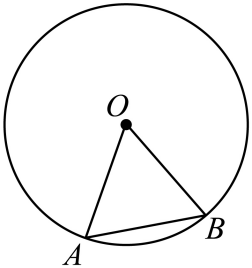
【答案】60°/60度
【分析】本题考查了圆的性质，等边三角形的性质与判定，得出△AOB是等边三角形是解题的关键．
根据半径为50mm，弦AB长50mm，可以判断△AOB是等边三角形，根据等边三角形的性质即可求解．
【详解】解：∵AO=BO=50mm，AB=50mm，
∴△AOB是等边三角形，
∴∠AOB=60°，
故答案为：60°．
【能力提升】
【题型19 直线相交的交点个数问题】
【例19】若四条不重合的直线在平面内交点的个数为a，则a的最大取值为（ ）
A．3 B．4 C．5 D．6
【答案】D
【分析】本题考查了直线与直线的交点问题．
根据直线与直线的位置关系，列出所有情况判断即可．
【详解】解：图1：当四条直线平行时，无交点；
图2：当三条平行，另一条与这三条不平行时有3个交点；
图3：当两两直线平行时，有4个交点；
图4：当有两条直线平行，而另两条不平行时有5个交点；
图5：当四条直线同交于一点时，只有1个交点；
图6：当四条直线两两相交，且不过同一点时，有6个交点；
图7：当有两条直线平行，而另两条不平行并且交点在平行线上时，有3个交点；
综上所述，a的最大取值为6，
故选D．
【变式19-1】若平面内互不重合的4条直线只有3个交点，则平面被分成了 个部分．
【答案】8或9．
【分析】根据题意画出图形即可．
【详解】如图，
或
所以，平面内互不重合的4条直线只有3个交点，则平面被分成了 8或9个部分．
故答案为：8或9．
【点睛】此题考查了相交线，关键是根据直线交点个数的问题，找出规律，解决问题．
【变式19-2】（24-25七年级上·河南郑州·期末）用归纳策略解答问题：
如图，四条直线l1，l2，l3，l4，我们发现每两条直线都有一个交点，且交点不重合，我们称这种相交方式为“两两相交”．
问题：如果有101条直线“两两相交”，它们有多少个交点？请写出你的思考过程．
【答案】5050个交点，见解析
【分析】本题主要考查了直线的交点个数问题，解题的关键在于能够根据特例推出相应的规律．
根据两直线“两两相交”有1个交点，三直线“两两相交”有1+2=3个交点，四条直线“两两相交”有1+2+3=6个交点，由此可以发现最多交点个数就是从1开始的连续的正整数相加，最后一个加数比直线的条数少1，由此进行求解即可
【详解】解：当有2条直线“两两相交”时，有1个交点；
当有3条直线“两两相交”时，有1+2=3个交点；
当有4条直线“两两相交”时，有1+2+3=6个交点；
……，
∴一般地，n条直线“两两相交”有1+2+3+4+…+n−1=nn−12个交点
∴当有101条直线“两两相交”时，有1+2+3+⋅⋅⋅+100=5050个交点．
所以有101条直线“两两相交”时，有5050个交点．
【变式19-3】平面上有7条不同的直线，如果其中任何三条直线都不共点．
(1)请画出满足上述条件的一个图形，并数出图形中各直线之间的交点个数；
(2)请再画出各直线之间的交点个数不同的图形（至少两个）；
(3)你能否画出各直线之间的交点个数为n的图形，其中n分别为6，21，15？
(4)请尽可能多地画出各直线之间的交点个数不同的图形，从中你能发现什么规律？
【答案】(1)图见解析，有6个
(2)见解析
(3)见解析
(4)①当7条直线都相互平行时，交点个数是0，这时交点最少，②当7条直线每两条均相交时，交点个数为21，这是交点最多
【分析】（1）画出满足条件的图形即可；
（2）根据题意画出与解析（1）交点个数不同的图形即可；
（3）根据题意要求画出交点个数分别为6，21，15的图形即可；
（4）从平行线的角度考虑，先考虑六条直线都平行，再考虑五条、四条，三条，二条直线平行，都不平行作出草图即可看出，从画出的图形中归纳规律即可得到答案．
【详解】（1）解：解：如图1所示；交点共有6个，
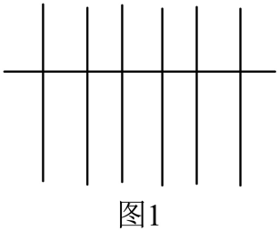
（2）解：如图2，3所示：
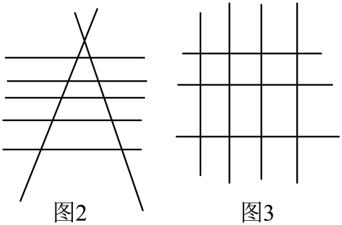
（3）解：当n=6时，必须有6条直线平行，都与一条直线相交．如图4所示：
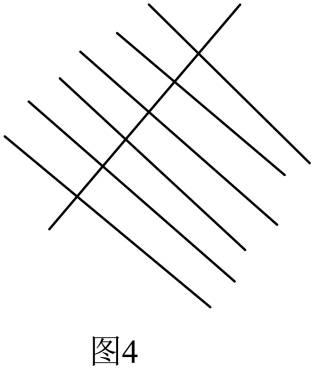
当n=21时，必须使7条直线中的每2条直线都相交（即无任何两条直线平行）如图5所示：
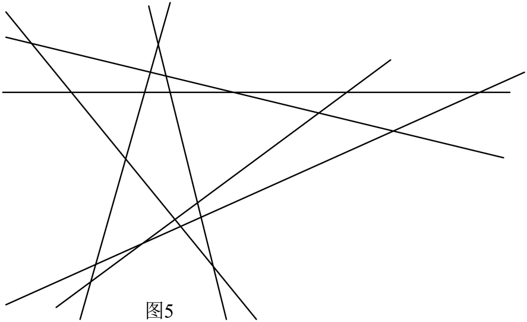
当n=15时，如图6所示．
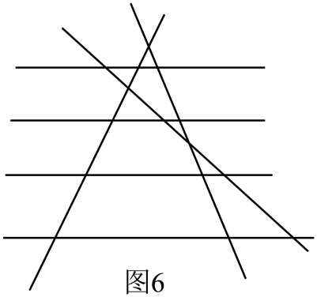
（4）解：当我们给出较多答案时，从较多的图形中，可以总结出以下规律：
①当7条直线都相互平行时，交点个数是0，这时交点最少，
②当7条直线每两条均相交时，交点个数为21，这是交点最多．
【点睛】本题主要考查了平行线与相交线，关键是根据一定的规律画出图形，再再根据图形归纳规律．
【题型20 线段的应用】
【例20】观察图形，并回答下列问题：

(1)图中共有几条线段？说明你分析这个问题的具体思路；
(2)请你用上面的思路来解决“十五个同学聚会每个人都与其他人握一次手，共握了多少次”这个问题；
(3)十五个同学聚会，每个人都送给其他人一张名片呢，共送了几张？
【答案】(1)10条，见解析；
(2)共握了105次；
(3)共送了210张．
【分析】（1）根据线段的概念，分别得到以A、B、C、D为端点，且不重复的线段，相加即可得到答案；
（2）将人演化成点，根据（1）结论，即可得到答案；
（3）十五个同学聚会，每个人都送给其他人一张名片，即每个人都送了14次，据此即可得到答案．
【详解】（1）解：图中共有10条线段，分析思路如下：
以A为端点的线段有：AB、AC、AD、AE，共4条；
以B为端点，且与前面不重复的线段有：BC、BD、BE，共3条；
以C为端点，且与前面不重复的线段有：CD、CE，共2条；
以D为端点，且与前面不重复的线段有：DE，共1条；
答：图中共有4+3+2+1=10条线段；
（2）解：将人演化成点，根据（1）结论可知，
握手的次数为：14+13+12+⋯+3+2+1=105，
答：十五个同学聚会每个人都与其他人握一次手，共握了105次；
（3）解：十五个同学聚会，每个人都送给其他人一张名片，即每个人都送了14次，
15×14=210，
答：十五个同学聚会，每个人都送给其他人一张名片呢，共送了210张．
【点睛】本题考查了线段的计数，线段计数时注意分类讨论，做到不遗漏，不重复，理解（3）互送的区别．
【变式20-1】如图，有一种电子游戏，电子屏幕上有一条直线，在直线上有A，B，C，D四点．点P沿直线l从右向左移动，当出现点P与A，B，C，D四点中的至少两个点距离相等时，就会发出警报，则直线l上会发出警报的点P最多有 个．
【答案】6
【分析】点P与A，B，C，D四点中的至少两个点距离相等时，也就是点P恰好是其中一条线段中点．而图中共有线段六条，所以出现报警次数最多6次．
【详解】解：由题意知，当P点经过任意一条线段中点的时候会发出警报，
∵图中共有线段DC、DB、DA、CB、CA、BA
∴发出警报的点P最多有6个．
故答案为：6．
【点睛】本题考查的是直线与线段的相关内容，正确理解题意、利用转化的思想去思考线段的总条数是解决问题的关键，可以减少不必要的分类．
【变式20-2】往返于成都、重庆两地的高铁列车，若中途停靠简阳、内江和永川站，则有（ ）种不同票价，要准备（ ）种车票．
A．7、14 B．8、16 C．9、18 D．10、20
【答案】D
【详解】设成都、重庆、简阳、内江和永川站分别为A， B， C， D， E.
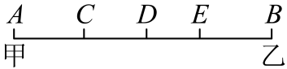
根据线段的定义，可知图中线段有AC、AD、AE、AB、CD、CE、CB、DE、DB、EB，共10条,∴有10种不同的票价.
∵车票需要考虑方向性，如，“AarrowC”与“CarrowA”票价相同，但车票不同，
∴需要准备20种车票.
故选D.
【变式20-3】如图，点B，C，D在线段AE上．
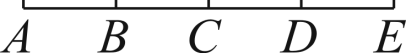
（1）图中共有几条线段？说说你分析这个问题的具体思路．
（2）你能用上面的思路来解决“8位同学参加班上组织的象棋比赛，比赛采用单循环制（即每两位同学之间都要进行一场比赛），那么一共要进行多少场比赛”这个问题吗？
【答案】（1）10，思路见解析；（2）28
【分析】(1)从左向右依次固定一个端点A，B，C，D找出线段，最后求和即可；
(2) 设线段上有m个点，该线段上共有线段x条，根据数线段的特点列出式子化简即可，把8位同学看作直线上的8个点即可得出结果．
【详解】解：(1) 共有10条线段，
∵ 以点A为左端点向右的线段有：线段AB、AC、AD、AE，
以点B为左端点向右的线段有线段BC、BD、BE，
以点C为左端点向右的线段有线段CD、CE，
以点D为左端点的线段有线段DE，
∴共有10条线段；
(2) 设线段上有m个点，该线段上共有线段x条，
则x=m−1+m−2+m−3+⋯+3+2+1，
∴倒序排列有x=1+2+3+⋯+m−3+m−2+m−1，
∴两式相加得2x=m+m+⋯+m=mm−1，
∴x=mm−12
把8位同学看作直线上的8个点，每两位同学之间的一场比赛看作为一条线段，直线上8个点所构成的线段条数就等于比赛的场数，因此一共要进行8×8-12=28场比赛．
【点睛】本题考查的是线段的计数问题，主要是数线段的技巧和方法，解本题的关键是找出规律，此类题目容易数重或遗漏，要特别注意．
【题型21 线段n等分点的有关计算】
【例21】如图，已知点C，D是线段AB上两点，AC:CD:DB=3:4:5，E是线段CD的中点，点F是线段DB的三等分点DF=13DB．

(1)若AB=60cm，求AE的长；
(2)若EF=11cm，求AB的长．
【答案】(1)25cm
(2)36cm
【分析】本题考查选段的和差运算，线段中点的定义，熟练掌握数形结合思想是解题的关键；
(1)根据线段的比，可设AC=3a，则CD=4a，DB=5a，由AB=3a+4a+5a=12a=60求出a的值即可；
(2)根据线段的比，可设AC=3b，则CD=4b，DB=5b，再根据线段中点的定义得出CE=DE=2b，由EF=11cm列方程求出b的值，再根据AB=12b进行计算即可.
本题考查两点间的距离，
【详解】（1）解：由于AC:CD:DB=3:4:5，可设AC=3a，则CD=4a，DB=5a，
∴AB=3a+4a+5a=12a=60，
∴a=5，
∴AC=15cm，CD=20cm，DB=25cm，
∵E是线段CD的中点，
∴CE=DE=12CD=10cm，
∴AE=AC+CE=25cm；
（2）由于AC:CD:DB=3:4:5，可设AC=3b，则CD=4b，DB=5b，
∵E是线段CD的中点，
∴CE=DE=12CD=2b，
∵DF=13DB=5b3，
∵EF=11cm，即2b+5b3=11，
解得b=3，
∴AB=3b+4b+5b
=12b
=36cm．
【变式21-1】（24-25七年级上·浙江温州·期末）都江堰李冰石人的肩部和脚部通常被用作测量水位．洪水水位C与枯水水位D分别位于整尊石人AB的六等分点处，AC=BDAC<CD，已知CD=2.2 m，则整尊石人AB的高度= m．
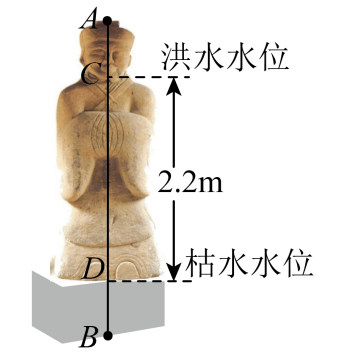
【答案】3.3
【分析】本题考查了线段的和与差，熟练掌握六等分点的含义是解题的关键；
根据C与D分别是AB的六等分点处，得出AC=BD=16AB，然后结合几何CD=2.2m根据线段和和与差求出AB即可．
【详解】解：∵洪水水位C与枯水水位D分别位于整尊石人AB的六等分点处，AC=BDAC<CD，
∴AC=BD=16AB，
∴CD=AB−AC−BD=23AB，
∵CD=2.2 m，
∴AB=2.2÷23=3.3m，
故答案为：3.3．
【变式21-2】如图，点C是线段AB的中点，点N是线段AC的三等分点．若线段AB的长为12，则线段BN的长度是（ ）
A．10 B．8 C．7或9 D．8或10
【答案】D
【分析】本题主要考查了线段和差倍分的计算，解题关键是熟练掌握线段与线段之间的和差倍分关系．
先根据已知条件求出AC和BC的长，然后根据点N的位置，分两种情况讨论，画出图形，利用已知条件，求出BN的值即可．
【详解】解：∵AB=12，点C是AB中点，
∴AC=BC=6，
分两种情况讨论：
①点N的位置如图所示：
∵点N是线段AC的三等分点，
∴ CN=13AC=2，
∴BN=BC+CN=6+2=8；
②点N位置如图所示：
∵点N是线段AC的三等分点，
∴ AN=13AC=2，
∴BN=AB−AN=12−2=10；
综上可知：BN的长度为8或10，
故选：D．
【变式21-3】如图，C，D，E是线段AB的四等分点，下列等式不正确的是（ ）

A．AB＝4AC B．CE＝12AB C．AE＝34AB D．AD＝12CB
【答案】D
【分析】由C，D，E是线段AB的四等分点，得AC＝CD＝DE＝EB＝14AB，即可知A、B、C均正确，则可求解
【详解】由C，D，E是线段AB的四等分点，得AC＝CD＝DE＝EB＝14AB，
选项A，AC＝14AB⇒AB＝4AC，选项正确
选项B，CE＝2CD⇒CE＝12AB，选项正确
选项C，AE＝3AC⇒AE＝34AB，选项正确
选项D，因为AD＝2AC，CB＝3AC，所以AD=23CB，选项错误
故选D．
【点睛】此题考查的是线段的等分，能理解题中：C，D，E是线段AB的四等分点即为AC＝CD＝DE＝EB＝14AB，是解此题的关键
【题型22 探究线段之间的数量关系】
【例22】（24-25七年级上·江苏扬州·期末）如图，已知点A、B在电线OP上，OA=25OP，BP=710OP．若将电线在点A处折叠，使点O、B分别落在点O′、B′处，则用老虎钳在点B′处剪断后，电线OP剪成的三段中，最短的电线与最长的电线长度比是（ ）

A．1:2 B．1:3 C．2:3 D．2:5
【答案】D
【分析】本题考查了翻折变换（折叠问题），比的应用，熟练掌握折叠的性质是解题的关键．
设OP=x，根据已知条件得到OA=AO′=25OP=25x，BP=710OP=710x，求得AB=A′B′=OA+BP−OP=25x+710x−x=110x，得到．BB′=15x．，B′P=OP−OB′=x−25x−110x=12x，于是得到结论．
【详解】解：设OP=x，
∴OA=AO′=25OP=25x，BP=710OP=710x，
∴AB=A′B′=OA+BP−OP=25x+710x−x=110x，
∴OB=O′B′=25x−110x=310x，
∴BB′=15x，B′P=OP−OB′=x−25x−110x=12x，
∴最短的电线与最长的电线长度比是BB′:B′P=15x12x=2:5，
故选：D．
【变式22-1】（24-25七年级下·湖南株洲·开学考试）如图1，AB是一条拉直的细绳，C和D两点在AB上，且AC:BC=2:3,AD:BD=3:7．若将点C固定，将AC折向BC，使得AC重叠在BC上（如图2），再沿点D剪断，使细绳分成三条，则分成的三条细绳的长度由小到大之比为（ ）
A．1:2:3 B．1:1:3 C．1:1:2 D．2:3:5
【答案】D
【分析】本题考查了线段的和与差，根据比值，将每一段的长度表示成总长度的几分之几，用代数的方法代入计算是解题关键．设对折后点D关于C点对称处为D′，被剪断两处分别是点D和D′，剪开的三段细绳依次是AD、DD′、D′B，根据题意AC:BC=2:3，可得AC:AB=2:5，AC=25AB；根据AD:BD=3:7，可得AD:AB=3:10，AD=310AB，CD=110AB，根据对折性质DD'=2DC，D′B=CB−CD′，把AD、DD′、D′B的长度写成关于AB的值，比较大小后代入计算即可．
【详解】解：设对折后点D关于C点对称处为D′，被剪断两处分别是点D和D′，剪开的三段细绳依次是AD、DD′、D′B，
∵AC:BC=2:3，AC+CB=AB，
∴AC:AB=2:(2+3)=2:5，
∴AC=25AB,BC=35AB，
∵AD:BD=3:7，AD+DB=AB，
∴AD:AB=3:(3+7)=3:10，
∴AD=310AB，
∴CD=AC−AD=25AB−310AB=110AB，
∴DD'=2DC=2×110AB=15AB；
∴D'B=CB−CD'=CB−CD=35AB−110AB=12AB；
∴DD′<AD<D′B．
∴DD′:AD:D′B=15AB:310AB:12AB=2:3:5．
故选：D．
【变式22-2】如图，线段AB的长为a，点C为线段AB的中点，D为线段AB上一点，且AD=13BD．图中共有 条线段；若P为直线AB上一点，且PA+PB=1110a，则PDAB的值为 ．
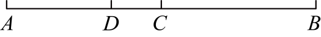
【答案】 6 45或310
【分析】本题主要考查线段的和差关系．先根据线段的定义写出所有的线段，再分点P在AB的延长线上和点P在BA的延长线上两种情况，分别运用线段的和差关系即可解答．
【详解】解：图中的线段有：AD，AC，AB，DC，DB，CB共6条线段，
故答案为：6；
∵点C为线段AB的中点，D为线段AB上一点，且AD=13BD，
∴BC=12AB=12a，AD=14AB=14a，
∵PA+PB=1110a>a，
∴点P在线段AB的延长线上或点P在线段BA的延长线上，
如图：当点P在线段AB的延长线上时，则AP=AB+BP=a+BP，
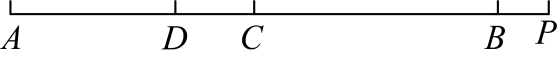
∵PA+PB=1110a，
∴a+BP+PB=1110a，
解得：PB=120a，
∴PD=AB+BP−AD=a+120a−14a=1620a，
∴PDAB=1620aa=1620=45；
如图：当点P在BA的延长线上时，则BP=AB+AP=a+AP，
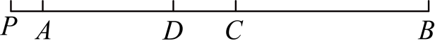
∵PA+PB=1110a，
∴AP+a+AP=1110a，
解得：PA=120a，
∴PD=PA+AD=120a+14a=310a，
∴PDAB=310aa=310．
故答案为：45或310．
【变式22-3】（24-25七年级上·湖北武汉·期末）已知点A，B，C，D，E在同一直线上．

(1)C是线段AB的中点，D是线段AC上的点，AB=30，
①如图（1），若CD=14BD，求线段CD的长；
②如图（2），E是线段AB上的点，D是线段AE的中点．若AD=2BE，求线段CE的长；
(2)C是线段AB上一点，D是线段AE的中点．若AC=2BC=8CD，直接写出BE与AB的数量关系．
【答案】(1)①CD=5；②CE=9
(2)AB=2BE或AB=6BE
【分析】本题考查的是两点间的距离的计算，正确理解线段中点的概念和性质是解题的关键．
（1）①根据中点定义求得BC的长度，根据BD=CD+BC，即可求解；
②设BE=x，则AD=2x，根据AB=AD+DE+BE，求解即可；
（2）分当D点在C点的右侧时和左侧两种情况，讨论即可求解；
【详解】（1）解：①∵C是线段AB的中点
∴BC=12AB=15
∵CD=14BD，
又∵BD=CD+BC，
∴CD=14CD+15，
∴CD=5
②设BE=x，则AD=2x，
∵D是线段AE的中点，
∴AD=DE=2x，
∵AB=AD+DE+BE，
∴2x+2x+x=30，
∴x=6，
∴BE=6，
∵CE=BC−BE，
∴CE=15−6=9；
（2）解：根据题意，当D点在C点的左侧时，作图如下；
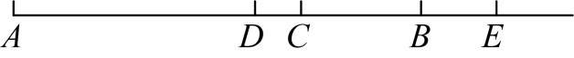
∵ D是线段AE的中点，
∴AD=DE=12AE，
∵ AC=2BC=8CD，
AD=AC−CD=7CD，
则DE=AD=7CD，
则BE=DE−CD−BC=2CD，
∴BD=DE−BE=5CD，
∴AB=AD+BD=12CD，
∴AB=6BE；
根据题意，当D点在C点的右侧时，作图如下；
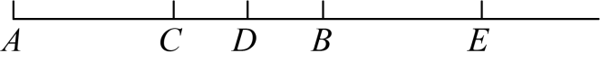
∵ D是线段AE的中点，
∴AD=DE=12AE，
∵AC=2BC=8CD，
∴BD=BC−CD=3CD，
∵ CE=DE+CD=10CD，
∴BE=CE−BC=6CD，
∴AB=12CD，
则AB=2BE
综上所述，AB=2BE或AB=6BE
【题型23 三角板中角度计算问题】
【例23】（24-25九年级上·江苏无锡·月考）将两块直角三角尺的直角顶点重合为如图所示的形状，若∠AOD=127°，则∠BOC=（ ）
A．37° B．47° C．53° D．43°
【答案】C
【分析】本题主要考查了三角板中角度的计算，根据三角板中角的特点可得∠AOB=∠COD=90°，再由角的和差关系求出∠AOC的度数，即可求出∠BOC的度数．
【详解】解：由题意得，∠AOB=∠COD=90°，
∴∠AOC+∠BOC=90°，
∵∠AOD=127°，
∴∠AOC+∠COD=127°，
∴∠AOC=37°，
∴∠BOC=53°，
故选：C．
【变式23-1】一副三角板，如图所示叠放在一起，则图中∠α的度数是（ ）
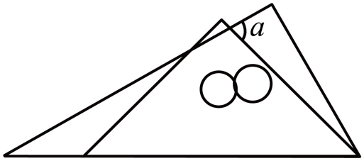
A．75° B．60° C．65° D．55°
【答案】A
【分析】本题考查了三角板中角度计算问题，由题意得：∠A=90°,∠ACB=60°−45°=15°，即可求解；
【详解】解：如图所示：
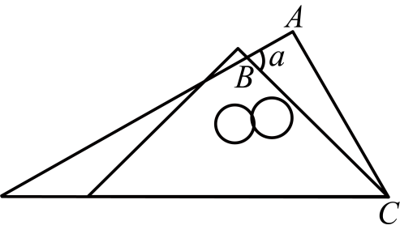
由题意得：∠A=90°,∠ACB=60°−45°=15°，
∴∠α=90°−15°=75°；
故选：A
【变式23-2】（25-26八年级上·广东江门·月考）将一副三角尺按如图所示的方式摆放，则∠α的大小为 ．

【答案】75°/75度
【分析】本题考查的是三角尺角度的有关计算，三角形内角和定理，熟知三角形内角和是180°是解答此题的关键．先根据直角三角板的性质得出∠ACD的度数，再由三角形内角和定理即可得出结论．
【详解】解：如图所示，
∵∠BCD=60°，∠BCA=45°，
∴∠ACD=∠BCD−∠BCA=60°−45°=15°，
∵∠D=90°，
∴ ∠α=180°−∠D−∠ACD=180°−90°−15°=75°，
故答案为：75°．
【变式23-3】（24-25六年级下·山东泰安·期末）利用三角板特殊角的度数，可以解决很多问题，现将一副三角尺叠放在一起．

(1)如图①，若∠1=4∠2，求∠BAE的度数；
(2)如图②，若∠CAD=2∠BAF，求∠BAD的度数．
【答案】(1)∠BAE=108°
(2)∠BAD=30°
【分析】本题考查了三角板中的角度计算、一元一次方程的应用，熟练掌握三角板特殊角的度数是解题的关键．
（1）由图可得∠1+∠2=90°，结合∠1=4∠2，求出∠2的度数，再利用角的和差即可求出∠BAE的度数；
（2）由图可知∠CAD+∠BAD=90°，∠BAD+∠BAF=60°，得出∠CAD−∠BAF=30°，再由∠CAD=2∠BAF，求出∠BAF的度数，再利用角的和差即可求出∠BAD的度数．
【详解】（1）解：∵∠BAC=90°，
∴∠1+∠2=90°，
∵∠1=4∠2，
∴4∠2+∠2=90°，
∴∠2=18°．
∵∠DAE=90°，
∴∠BAE=∠DAE+∠2=90°+18°=108°；
（2）解：由图可知∠CAD+∠BAD=90°，∠BAD+∠BAF=60°，
∴∠CAD−∠BAF=90°−60°=30°．
又∵∠CAD=2∠BAF，
∴∠BAF=30°，
∴∠BAD=60°−∠BAF=60°−30°=30°．
【题型24 几何图形中角度计算问题】
【例24】（2025七年级上·全国·专题练习）如图1，点O为直线AB上一点，过点O作射线OC，使∠AOC:∠BOC=2:1，将直角三角板的直角顶点放在点O处，一边ON在射线OA上，另一边OM在直线AB的下方．

(1)在图1中，∠AOC=______，∠BOC=______．
(2)将图1中的三角板按图2的位置放置，使得OM在射线OA上，则∠CON=______；
(3)将上述直角三角板按图3的位置放置，使得OM在∠BOC的内部，求∠BON−∠COM的度数．
【答案】(1)120°，60°；
(2)30°；
(3)∠BON−∠COM的度数为30°
【分析】本题考查角的计算，找出各个角之间的关系，与已知条件建立关系，然后求出所求角的度数是解题的关键．
（1）根据平角的定义可知∠AOC+∠BOC=180°，结合已知条件∠AOC:∠BOC=2:1，即可求出∠AOC和∠BOC的度数；
（2）根据∠AOC的度数和∠MON的度数可以得到∠CON的度数；
（3）根据角的和差关系，分别用含有∠BOM的式子表示出∠BON和∠COM，然后两者相减即可得到∠BON−∠COM的度数．
【详解】（1）解：∵∠AOC+∠BOC=180°，∠AOC:∠BOC=2:1，
∴∠AOC=120°,∠BOC=60°，
故答案为：120°，60°；
（2）由（1）得，∠AOC=120°，
∵∠MON=90°，
∴∠CON=∠AOC−∠MON=120°−90°=30°，
故答案为：30°；
（3）由（1）得，∠BOC=60°，
∴∠COM=∠BOC−∠BOM=60°−∠BOM，
∵∠MON=90°，
∴∠BON=∠MON−∠BOM=90°−∠BOM，
∴∠BON−∠COM=90°−∠BOM−60°−∠BOM=30°，
即∠BON−∠COM的度数为30°．
【变式24-1】已知∠AOB是直角，在∠AOB的内部有一条射线OC，满足∠AOC=12∠COB，在∠AOB所在平面上另有一条射线OD，满足∠BOD=13∠AOC，则∠COD的度数为 ．
【答案】50°或70°
【分析】本题考查了角的计算，关键是分两种情况讨论进行求值．先根据题意求出∠AOC=30°，∠COB=60°，∠BOD=10°，再分两种情况进行分析，即可求解．
【详解】解：∵∠AOB=90°，∠AOC=12∠COB，∠AOC+∠COB=∠AOB，
∴∠AOC=30°，∠COB=60°，
∵∠BOD=13∠AOC，
∴∠BOD=10°，
当射线OD在∠BOC的内部时，如图：
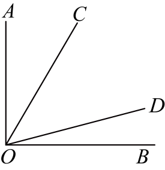
此时∠COD=∠BOC−∠BOD=60°−10°=50°，
当射线OD在∠BOC的外部时，如图：
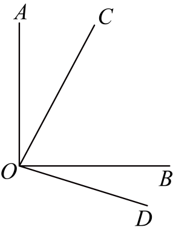
此时∠COD=∠BOC+∠BOD=60°+10°=70°．
故答案为：50°或70°．
【变式24-2】（24-25七年级上·甘肃兰州·期末）如图，射线OC在∠AOB的内部，图中共有3个角：∠AOB，∠AOC和∠BOC，若其中一个角的度数是另一个角度数的两倍，则称射线OC是∠AOB的“平衡线”.若∠AOB=72°，且射线OC是∠AOB的“平衡线”，则∠AOC的度数为（ ）

A．24° B．24°或36° C．36°或48° D．24°或36°或48°
【答案】D
【分析】本题主要考查了角的计算、一元一次方程的应用等知识点，理解“平衡线”的定义以及分类讨论思想是解题的关键．
根据“平衡线”的定义，分∠AOB=2∠AOC、∠AOC=2∠BOC、∠BOC=2∠AOC三种情况，分别列出关于∠AOC的方程求解即可．
【详解】解：根据“平衡线”的定义，可分三种情况讨论：
①当∠AOB=2∠AOC时，即2∠AOC=72°，解得：∠AOC=36°；
②当∠AOC=2∠BOC时，
∵∠AOC+∠BOC=∠AOB=72°，
∴32∠AOC=72°，解得：∠AOC=48°；
③当∠BOC=2∠AOC时，
∵∠BOC+∠AOC=∠AOB=72°，
∴3∠AOC=72°，解得：∠AOC=24°；
综上，∠AOC的度数为24°或36°或48°．
故选：D．
【变式24-3】定义：若两个角的度数差的绝对值等于60°，则称这两个角互为“优角”，其中一个角是另一个角的“优角”．如∠α=100°，∠β=40°，∠α−∠β=60°，则∠α和∠β互为“优角”．如图，∠AOB=120°，射线OC平分∠AOB，∠EOF在∠AOB的内部．若∠EOF=60°，则图中互为“优角”的共有（ ）
A．6对 B．7对 C．8对 D．9对
【答案】B
【分析】本题考查了新型定义及角的和差关系，掌握角的和差是解题的关键．根据互为“优角”的定义进行解答即可．
【详解】解：∵∠AOB=120°，射线OC平分∠AOB，
∴∠AOC=∠BOC=12∠AOB=60°；
∵∠AOB−∠AOC=∠BOC=60°,
∴∠AOB、∠AOC互为“优角”；
∵∠AOB−∠BOC=∠AOC=60°，
∴∠AOB、∠BOC互为“优角”；
∵∠AOB−∠EOF=120°−60°=60°,
∴∠AOB、∠EOF互为“优角”；
∵∠AOF−∠AOE=∠EOF=60°,
∴∠AOF、∠AOE互为“优角”；
∵∠AOF−∠COF=∠AOC=60°,
∴∠AOF、∠COF互为“优角”；
∵∠BOE−∠BOF=∠EOF=60°,
∴∠BOE、∠BOF互为“优角”；
∵∠BOE−∠EOC=∠BOC=60°,
∴∠BOE、∠EOC互为“优角”；
故共有7对角互为“优角”
故选∶B．
【题型25 角n等分线的有关计算】
【例25】已知OC是∠AOB的平分线，∠BOD=13∠COD，OE平分∠COD，设∠AOB=α，则∠BOE=（ ）
A．516α或18α B．516α或16α C．18α或16α D．16α
【答案】A
【分析】本题考查角平分线的定义，角的和与差，角的n等分线．利用数形结合和分类讨论的思想是解题关键．分类讨论：当OD位于∠BOC内部时和当OD位于∠BOC外部时，解答即可．
【详解】解：如图1，当OD位于∠BOC内部时，
∵∠AOB=α，OC是∠AOB的平分线，
∴∠COB=12α．
∵∠BOD=13∠COD，
∴∠BOD=14∠COB=18α，∠COD=38α．
∵OE平分∠COD，
∴∠EOD=12∠COD=316α，
∴∠BOE=∠EOD+∠BOD=316α+18α=516α；
如图2，当OD位于∠BOC外部时，
∵∠AOB=α，OC是∠AOB的平分线，
∴∠COB=12α．
∵∠BOD=13∠COD，
∴∠BOD=12∠COB=14α，∠COD=34α．
∵OE平分∠COD，
∴∠EOD=12∠COD=38α，
∴∠BOE=∠EOD−∠BOD=38α−14α=18α；
综上可知∠BOE= 516α或18α．
故选：A．
【变式25-1】如图，设锐角∠AOB的度数为α，若一条射线平分∠AOB，则图中所有锐角的和为2α．若四条射线五等分∠AOB，则图中所有锐角的和为( )
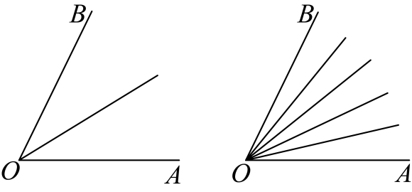
A．7α B．6α C．5α D．4a
【答案】A
【分析】本题考查了角度的计算，角的数量问题，根据题意可得每一个小角的度数为15α，进而将所有角的度数相加即可求解．
【详解】∵四条射线五等分∠AOB，
∴每个小角的度数为15α．如图，
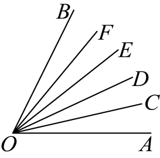
图中所有锐角的和为
∠AOC+∠COD+∠DOE+∠EOF+∠BOF+∠AOD+∠COE+∠DOF+∠BOE+
∠AOE+∠COF+∠BOD+∠AOF+∠BOC+∠AOB=
5×15α+4×25α+3×35α+2×45α+α
=7α，
故选：A．
【变式25-2】定义：从∠AOB的顶点出发，在角的内部引一条射线OC，把∠AOB分成1:2的两部分，射线OC叫做∠AOB的三等分线．若在∠MON中，射线OP是∠MON的三等分线，射线OQ是∠MOP的三等分线，设∠MOQ=x，则∠MON用含x的代数式表示为（ ）
A．94x或3x或92x B．94x或3x或9x C．94x或92x或9x D．3x或92x或9x
【答案】C
【分析】分四种情况，分别计算，即可求解．
【详解】解：如图：射线OP是∠MON∠MOP=2∠NOP的三等分线，射线OQ是∠MOP∠QOP=2∠MOQ的三等分线，
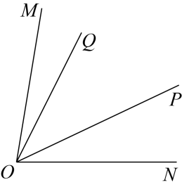
则∠QOP=2x，∠NOP=12∠MOP=12×x+2x=32x，
∴∠MON=∠MOQ+∠QOP+∠NOP=x+2x+32x=92x；
如图：射线OP是∠MON∠MOP=2∠NOP的三等分线，射线OQ是∠MOP∠MOQ=2∠QOP的三等分线，
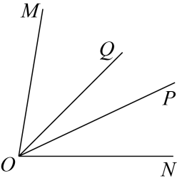
则∠QOP=12x，∠NOP=12∠MOP=12×x+12x=34x，
∴∠MON=∠MOQ+∠QOP+∠NOP=x+12x+34x=94x；
如图：射线OP是∠MON∠NOP=2∠MOP的三等分线，射线OQ是∠MOP∠MOQ=2∠QOP的三等分线，
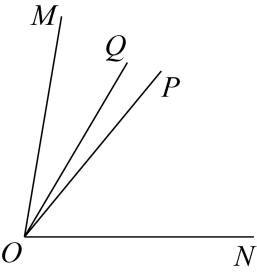
则∠QOP=12x，∠NOP=2∠MOP=2×x+12x=3x，
∴∠MON=∠MOQ+∠QOP+∠NOP=x+12x+3x=92x；
如图：射线OP是∠MON∠NOP=2∠MOP的三等分线，射线OQ是∠MOP∠QOP=2∠MOQ的三等分线，
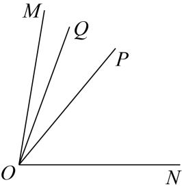
则∠QOP=2x，∠NOP=2∠MOP=2×x+2x=6x，
∴∠MON=∠MOQ+∠QOP+∠NOP=x+2x+6x=9x；
综上，∠MON为94x或92x或9x，
故选：C．
【点睛】本题考查了角的有关计算，画出图形，采用分类讨论的思想是解决本题的关键．
【变式25-3】如图①，射线OC在∠AOB内部，图中共有三个角∠AOC、∠AOB、 ∠BOC，若其中有两个角的度数之比为1:2，则称射线OC为∠AOB的“幸运线”．如图②，若∠MON=120°，射线OP为∠MON的“幸运线”，则∠MOP的度数是 ．
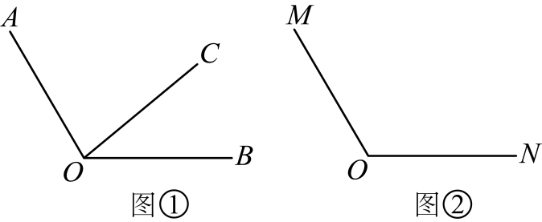
【答案】40°,60°,80°
【分析】本题考查了角的和差，正确分情况讨论是解题关键．分四种情况：∠MON=2∠MOP时，
∠MON=2∠NOP时，∠MOP=2∠NOP时，∠NOP=2∠MOP时，再根据角的和差进行计算即可．
【详解】解：由题意，分以下四种情况：
①当∠MON=2∠MOP时，射线OP是∠MON的“幸运线”，
∵∠MON=120°，
∴∠MOP=12∠MON=60°；
②当∠MON=2∠NOP时，射线OP是∠MON的“幸运线”，
∵∠MON=120°，
∴∠NOP=12∠MON=60°，
∴∠MOP=∠MON−∠NOP=60°；
③当∠MOP=2∠NOP时，射线OP是∠MON的“幸运线”，
∵∠MON=120°，∠MOP+∠NOP=∠MON，
∴∠MOP+12∠MOP=120°，
解得∠MOP=80°；
④当∠NOP=2∠MOP时，射线OP是∠MON的“幸运线”，
∵∠MON=120°，∠MOP+∠NOP=∠MON，
∴∠MOP+2∠MOP=120°，
解得∠MOP=40°；
综上，∠MOP的度数为60°或80°或40°，
故答案为：60°或80°或40°．
【思维拓展】
【题型26 实际问题中角度计算问题】
【例26】（24-25九年级下·河南信阳·月考）如图，阳光与水平面成30°角，若要用平面镜使阳光竖直射入井中（物理学中，反射角=入射角），则阳光与平面镜的夹角（∠1）为 °
【答案】30
【分析】本题考查了角的计算，根据光的反射定律内容即可求解，掌握相关知识是解题的关键．
【详解】解：补上反射光线如图：
由题意可知，∠DOE=∠AOB=90°，
∴∠BOC=30°+90°=120°，
∴∠COD=60°，
∴∠1=90°−60°=30°，
故答案为：30．
【变式26-1】（24-25八年级下·广东深圳·期中）如图1，汉代的《淮南万毕术》中记载的“取大镜高悬，置水盆于其下，则见四邻矣”，是古人利用光的反射定律改变光路的方法．为了探清一口深井的底部情况，如图2，在井口放置一面平面镜可改变光路，当太阳光线AB与地面CD所成夹角∠ABC=48°时，已知∠ABE=∠FBM，要使太阳光线经反射后刚好垂直于地面射入深井底部，此时平面镜EF与地面的夹角∠EBC= ．
【答案】69°/69度
【分析】本题主要考查了垂线和角的计算，根据BM⊥CD，得∠CBM=90°，所以∠ABE+∠FBM=42°，再根据∠ABE=∠FBM，得∠ABE=∠FBM=21°，即可得∠EBC=21°+48°=69°．
【详解】解：如图，
由题意知，BM⊥CD，
∴∠CBM=90°，
∵∠ABC=48°，
∴∠ABE+∠FBM=180°−90°−48°=42°，
∵∠ABE=∠FBM，
∴∠ABE=∠FBM=21°，
∴∠EBC=21°+48°=69°．
故答案为：69°．
【变式26-2】如图，把∠APB放置在量角器上，P与量角器的中心重合，读得射线PA、PB分别经过刻度117和153，把∠APB绕点P逆时针方向旋转到∠A′PB′，下列结论：
①∠APA′=∠BPB′；
②若射线PA′经过刻度27，则∠B′PA与∠A′PB互补；
③若∠APB′=12∠APA′，则射线PA′经过刻度45．
其中正确的是（ ）

A．①② B．①③ C．②③ D．①②③
【答案】D
【分析】由∠APB=∠A′PB′=36°，得∠APA′=∠BPB′，即可判断①，由∠B′PA=117°-27°-36°=54°，∠A′PB=153°-27°=126°，即可判断②，由∠APB′=12∠APA′，得∠APA′=2∠A′PB′=72°，进而得∠OPA′=45°，即可判断③．
【详解】∵射线PA、PB分别经过刻度117和153，∠APB绕点P逆时针方向旋转到∠A′PB′，
∴∠APB=∠A′PB′=36°，
∵∠APA′=∠A′PB′+∠APB′，∠BPB′=∠APB+∠APB′，
∴∠APA′=∠BPB′，
故①正确；
∵射线PA′经过刻度27，
∴∠B′PA=117°-27°-36°=54°，∠A′PB=153°-27°=126°，
∴∠B′PA+∠A′PB=54°+126°=180°，即：∠B′PA与∠A′PB互补，
故②正确；
∵∠APB′=12∠APA′，
∴∠APA′=2∠A′PB′=72°，
∴∠OPA′=117°−∠APA′=117°−72°=45°，
∴射线PA′经过刻度45．
故③正确．
故选D．
【点睛】本题主要考查角的和差倍分关系以及补角的定义，掌握角的和差倍分关系，列出方程，是解题的关键．
【变式26-3】如图1，大课间的广播操展让我们充分体会到了一种整体的图形之美，欢欢和乐乐想从数学角度分析下如何能让班级同学们的广播操做得更好，他们搜集了标准广播操图片进行讨论，如图2，为了方便研究，定义两手手心位置分别为A，B两点，两脚脚跟位置分别为C，D两点，定义A，B，C，D平面内O为定点，将手脚运动看作绕点O进行旋转：

(1)填空：如图2，A，O，B三点共线，且∠AOC=∠BOC，则∠AOC=______°
(2)第三节腿部运动中，如图3，欢欢发现，虽然A，O，B三点共线，却不在水平方向上，且∠AOD:∠BOC=6:5．她经过计算发现，∠AOC−20°∠BOD+12°的值为定值，请判断欢欢的发现是否正确，如果正确请求出这个定值，如果不正确，请说明理由；
(3)第四节体侧运动中，乐乐发现，两腿左右等距张开且∠COD=30°，开始运动前A、O、B三点在同一水平线上，OA、OB绕点O顺时针旋转，OA旋转速度为50°/s，OB旋转速度为25°/s，当OB旋转到与OD重合时，运动停止，如图4
①运动停止时，直接写出∠AOD=______；
②请帮助乐乐求解运动过程中∠AOC与∠BOE的数量关系．
【答案】(1)90
(2)正确，代数式的值为56；
(3)①105°；②当0≤t≤2.1时，∠AOC+2∠BOE=255°；当2.1<t≤3时，∠AOC−2∠BOE=105°．
【分析】（1）由A，O，B三点共线，可得出∠AOC+∠BOD=180°，再由两角相等，可得出∠AOC=90°；
（2）由∠AOD:∠BOC=6:5，设∠AOD=6α，则∠BOC=5α，分别表达∠AOC−20°和∠BOD+12°，再求比值，可得结论；
（3）①算出运动停止时的时间，求出OA运动的角度，进而求出∠AOD的度数；②由OA的运动过程可知，需要分类讨论，在点C，O，A共线前，和共线后两种状态，分别求解即可．
【详解】（1）解：∵A，O，B三点共线，
∴∠AOC+∠BOD=180°，
∵∠AOC=∠BOD，
∴∠AOC=12×180°=90°．
故答案为：90；
（2）∵∠AOD:∠BOC=6:5，
设∠AOD=6α，则∠BOC=5α，
∴∠AOC=180°−∠BOC=180°−5α，∠BOD=180°−∠AOD=180°−6α，
∴∠AOC−20°∠BOD+12°=180°−5α−20°180°−6α+12°=160°−5α192°−6α=560°−2α6100°−2α=56．
∴欢欢的发现是正确的，代数式的值为56；
（3）解：∵∠COD=30°，
∴∠COE=∠EOD=15°，∠BOD=∠AOC=75°，
设运动时间为ts，则t=75°÷25°=3，则0≤t≤3．
①运动停止时，即t=3时，OA旋转的角度为50°×3=150°，
∴∠AOD=75°+180°−150°=105°，
故答案为：105°；
②当点C，O，A三点共线时，t=180°−75°÷50°=2.1；
∴当0≤t≤2.1时，∠AOC=75°+50°t，∠BOE=90°−25°t，
∴∠AOC+2∠BOE=255°；
当2.1<t≤3时，∠AOC=75°+30°+180°−50°t=285°−50°t，
∠BOE=90°−25°t，
∴∠AOC−2∠BOE=105°．
综上，当0≤t≤2.1时，∠AOC+2∠BOE=255°；当2.1<t≤3时，∠AOC−2∠BOE=105°．
【点睛】本题主要考查角的和差的相关计算，发现图形中角之间的和差关系是解题关键．
【题型27 与线段有关的动点问题】
【例27】（24-25七年级上·浙江绍兴·期末）如图，已知数轴上A,B两点对应的数分别为−13和−5，B,C两点对应的数互为相反数．

(1)求AC的长；
(2)若点P从点A出发，以每秒1个单位长度的速度向终点C运动．同时点Q从点C出发，以每秒2个单位长度的速度向点A运动，当点Q到达点A后立即返回，仍然以每秒2个单位长度的速度运动至点C停止，设运动时间为t（秒）．
①问t为何值时，B为PQ的中点？
②当PQ=13AC时，求t的值．
【答案】(1)18
(2)①2或343②4或8或12
【分析】此题主要考查了数轴上的动点问题，一元一次方程的应用，根据点的运动表示出点的位置以及列出方程是解题的关键．
（1）根据相反数的定义求出点C对应的数，再根据两点间的距离求出AB和AC；
（2）①求出P，Q表示的数，根据B为PQ的中点列出方程，解之即可；②分0≤t<9和9≤t≤18两种情况，根据P，Q表示的数列出方程，求解即可．
【详解】（1）解：∵A，B两点对应的数分别为−13和−5，B，C两点对应的数互为相反数，
∴C点对应的数为5，
∴AC=5−−13=18；
（2）解：设点P对应的数为p，点Q对应的数为q，
则：p=−13+t0≤t≤18，q=5−2t0≤t<9−13+2t−99≤t<18，
①当0≤t<9时，p+q2=−5，即：−13+t+5−2t2=−5，解得：t=2，
当9≤t<18时，p+q2=−5，即：−13+t+−13+2t−92=−5，解得：t=343，
综上所述，t的值为2或343；
②当0≤t<9时，
∵PQ=13AC，
∴PQ=p−q=−13+t−5−2t=13×18，
解得：t=8或t=4，
当9≤t<18时，
∵PQ=13AC，
∴PQ=p−q=−13+t−−13+2t−9=13×18，
解得：t=12或t=24（舍），
综上所述，t的值为4或8或12．
【变式27-1】（24-25七年级上·四川成都·期末）如图，数轴上点A、B两点相距100个单位长度，点B在点A的右边，点A表示的数是−30．动点P从点A出发，以每秒6个单位长度的速度沿数轴正方向运动，动点Q同时从点B出发，以每秒4个单位长度的速度也沿数轴正方向运动，设运动时间为t秒．

(1)点B表示的数是多少？
(2)当点P、点Q相距20个单位长度时，求t的值；
(3)设M为线段PA的中点，N为线段QB的中点，用t的代数式表示线段MN的长度，并求当点M与点N重合时t的值．
【答案】(1)70
(2)40或60
(3)t−100；100
【分析】本题主要考查了数轴上的动点问题、列代数式、线段中点的定义、一元一次方程的应用，理解题意正确表示出数轴上的动点表示的数是解题的关键．
（1）根据题意即可求解；
（2）用t分别表示出点P、点Q表示的数，得出PQ的长度，结合点P、点Q相距20个单位长度列出方程，求解方程即可得出t的值；
（3）利用线段中点的定义表示出点M、点N表示的数，得出线段MN的长度，再根据点M与点N重合即可求出对应t的值．
【详解】（1）解：−30+100=70，
∴点B表示的数是70．
（2）解：由题意得，点P表示的数为−30+6t，点Q表示的数为70+4t，
∴PQ=−30+6t−70+4t=2t−100，
∵点P、点Q相距20个单位长度，
∴2t−100=20，
∴2t−100=±20，
解得：t=40或t=60，
∴t的值为40或60．
（3）解：由（2）得，点P表示的数为−30+6t，点Q表示的数为70+4t，
∵ M为线段PA的中点，N为线段QB的中点，
∴点M表示的数为−30+6t−302=−30+3t，点N表示的数为70+4t+702=70+2t，
∴MN=−30+3t−70+2t=t−100，
当点M与点N重合时，MN=0，即t−100=0，
解得：t=100，
∴线段MN的长度为t−100，当点M与点N重合时t的值为100．
【变式27-2】（24-25七年级上·辽宁盘锦·期末）点C是直线AB上一动点，当CA=2CB时，我们称点C是点A与点B的衍生点，记作C(A&B)，
【定义理解】
问题（1）若点C在线段AB上时，A表示−3，B表示6时，则C(A&B)表示的数是 ．
【深入研究】
当点C是点A与点B的衍生点时，分别取线段AC，BC的中点M，N，发现线段CM、CN、AB之间存在着一种特殊的数量关系，小明同学觉得若想探寻此问题，需要分两种情况讨论：①点C在线段AB上时；②点C在线段AB的延长线上时．
问题（2）请任意选择①，②中的一种情况，画出图形，猜想线段CM,CN,AB之间满足的数量关系，并说明理由；
【拓展提升】
问题（3）若点C在线段AB上，线段AB=20cm,BC=8cm，动点P、Q分别从A、B两端同时出发，点P以2cm/s的速度沿AB向右运动，终点为B，点Q以3cm/s的速度沿BA向左运动，到达A点后立即返回，终点是B．当一个点到达终点，另一个点也随之停止运动，请求出运动多少秒时，点C是点P与点Q的衍生点．
【答案】（1）3（2）①CM+CN=12AB②CM−CN=12AB（3）当运动时间为1或72或192秒时，点C是点P与点Q的衍生点
【分析】本题主要考查了线段的和差，线段中点的性质，线段中的动点问题，解题的关键是掌握分类讨论的数学思想．
（1）根据新定义，确定线段的长度，然后求点表示的数即可；
（2）①利用线段的中点性质和线段的和差表示数量关系即可；
②利用线段的中点性质和线段的和差表示数量关系即可；
（3）采用分类讨论的思想，根据动点的运动轨迹，结合新定义下的线段长度关系，列方程求解即可．
【详解】解：（1）AB=6−−3=9，
根据题意得，CA=23AB=23×9=6，
∴C(A&B)表示的数是−3+6=3；
（2）①点C在线段AB上时，
如图所示，
∵线段AC，BC的中点分别为点M，N，
∴CM=12AC,CN=12BC，
又∵AC+BC=AB，
∴CM+CN=12AB；
②点C在线段AB的延长线上时，当CA=2CB时，AB=BC，
如图所示，此时，点B是线段AC的中点，即点B与点M重合，

∵点N为线段BC的中点，
∴CN=BN=12BC=12AB，
∴CM−CN=BN=12AB；
（3）点P运动到终点所需时间为20÷2=10秒，点Q运动到终点所需时间是2×20÷3=403秒，设运动时间为t秒，讨论如下：
①如图所示，当PC=2CQ时，根据题意得，

12−2t=28−3t，
解得t=1；
②如图所示，当PC=2CQ时，根据题意得，

12−2t=23t−8
解得t=72；
③如图所示，当CQ=2CP时，根据题意得，

3t−8=22t−12
解得t=16>10（舍去）；
④如图所示，当点Q到达点A折返回来后，PC=2CQ时，根据题意得，

212−3t−20=2t−12
解得t=192；
综上，当运动时间为1或72或192秒时，点C是点P与点Q的衍生点．
【变式27-3】（24-25七年级上·江西九江·阶段练习）如图，点C,D,E都在直线AB上，C是线段AB的中点，E是线段CB的中点，CE=4．

(1)当点D在线段AC上且AD:DC=1:3时，求DC和AB的长．
(2)若P是直线AB上的动点，动点P从点A出发，以3个单位长度/秒的速度沿着AB的方向运动，运动时间为t秒．
①已知另一动点Q从点E出发，以2个单位长度/秒的速度沿着EA的方向同时运动．是否存在PB=QB？若存在，求出此时运动的时间t；若不存在，请说明理由．
②当动点P在线段AC上运动时，M,N分别是线段AC和BP的中点，试判断AB−CP与线段MN之间的数量关系，并说明理由．
【答案】(1)DC=6，AB=16
(2)①t=125或t=20；②AB−CP=2MN
【分析】本题主经考查了动点产生的线段的计算．熟练掌握线段中点定义，线段的和差倍分关系，是解题的关键．
（1）根据中点，得CB=2CE=8，AB=2CB=16，根据AD:DC=1:3，得DC=6；
（2）①存在，当P、Q相遇时，BP=16−3t，BQ=4+2t，得16−3t=4+2t，解得t=125；当P、Q相遇后，BP=3t−16，BQ=4+2t，得3t−16=4+2t，解得t=20；②根据中点，得AM=CM=4，BN=1216−3t，得MN=BM−BN=123t+8，根据AB−CP=3t+8，即得AB−CP=2MN．
【详解】（1）解：∵E是线段CB的中点，CE=4．∴CB=2CE=8，
∵C是线段AB的中点，
∴AC=CB=8，
∴AB=2CB=16，
∵点D在线段AC上且AD:DC=1:3，
∴DC=34AC=6；

（2）解：①存在，
当P、Q相遇时，
∵AP=3t，EQ=2t，AB=16，BE=4，
∴BP=16−3t，BQ=4+2t，
∵BP=BQ，
∴16−3t=4+2t，
解得t=125；
当P、Q相遇后，
∵BP=3t−16，BQ=4+2t，
∴3t−16=4+2t，
解得t=20；
故t=125或t=20；

②AB−CP=2MN，理由：
∵M,N分别是线段AC和BP的中点，AC=8，BP=16−3t，
∴AM=CM=12AC=4，BN=12BP=1216−3t，
∵BM=AB−AM=12，
∴MN=BM−BN=12−1216−3t=123t+8，
∵CP=AC−AP=8−3t，
∴AB−CP=16−8+3t=3t+8，
∴AB−CP=2MN．

【题型28 旋转成动角的有关计算】
【例28】（24-25七年级上·四川成都·期末）已知∠AOB=90°．

(1)如图1，若射线ON，OM分别为∠AOC，∠BOC的角平分线，则∠MON= ．
(2)如图2，射线OC从OA出发绕点O以每秒20°的速度沿逆时针方向旋转，射线OD从OA出发绕点O以每秒10°的速度沿顺时针方向旋转，设运动时间为t，且OM平分∠BOC．
①当0<t<4.5时，若ON分∠AOC为1:3两个部分，求满足∠DON=12∠MON时，t的值．
②如图3，若OP平分∠AOD，当0<t<6且t≠4.5时，试判断2∠MOP−∠COD是否为定值．若是，请求出该定值；若不是，请说明理由．
【答案】(1)45°
(2)①95或911；②2∠MOP−∠COD=90°，为定值
【分析】本题考查了角的平分线的应用，解方程，角的和差计算，本题难度很大，熟练掌握定义和解方程，画出图形是解题的关键．
（1）根据角平分线定义和角的和差关系即可求得答案；
（2）①由题意得，∠AOC=20°t，∠AOD=10°t，∠BOC=90°−20°t，由OM平分∠BOC，ON分∠AOC为1:3两个部分，可得：∠AON=14∠AOC=5°t，∠CON=34∠AOC=15°t或∠AON=34∠AOC=15°t，∠CON=14∠AOC=5°t，分别根据∠DON=12∠MON，建立方程求解即可；
②分两种情况：当0<t<4.5时，当4.5<t<6时，利用角平分线定义及角的和差关系即可判断2∠MOP−∠COD为定值．
【详解】（1）解：如图1，∠AOB=90°，

则∠AOC+∠BOC=90°，
∵射线ON，OM分别为∠AOC，∠BOC的角平分线，
∴∠CON=12∠AOC，∠MOC=12∠BOC，
∴∠MON=∠MOC+∠CON=12(∠AOC+∠BOC)=45°，
故答案为：45°．
（2）解：①如图2，

∵射线OC从OA出发绕点O以每秒20°的速度沿逆时针方向旋转，射线OD从OA出发绕点O以每秒10°的速度沿顺时针方向旋转，运动时间为t，
∴∠AOC=20°t，∠AOD=10°t，
∴∠BOC=90°−20°t，
∵OM平分∠BOC，ON分∠AOC为1:3两个部分，
∴∠COM=12∠BOC=45°−10°t，∠AON=14∠AOC=5°t，∠CON=34∠AOC=15°t或∠AON=34∠AOC=15°t，∠CON=14∠AOC=5°t，
当∠AON=14∠AOC=5°t，∠CON=34∠AOC=15°t时，
∴∠DON=∠AON+∠AOD=5°t+10°t=15°t，∠MON=∠COM+∠CON=45°−10°t+15°t=45°+5°t，
∵∠DON=12∠MON，
∴15°t=12(45°+5°t)，
解得：t=95；
当∠AON=34∠AOC=15°t，∠CON=14∠AOC=5°t时，
∴∠DON=∠AON+∠AOD=15°t+10°t=25°t，∠MON=∠COM+∠CON=45°−10°t+5°t=45°−5°t，
∵∠DON=12∠MON，
∴25°t=12(45°−5°t)，
解得：t=911；
综上所述，t的值为95或911．
②当0<t<4.5时，如图3，∠AOC=20°t，∠AOD=10°t，∠BOC=90°−20°t，

∵OM平分∠BOC，OP平分∠AOD，
∴∠MOC=12∠BOC=45°−10°t，∠AOP=12∠AOD=5°t，
∴∠MOP=∠MOC+∠AOC+∠AOP=45°−10°t+20°t+5°t=45°+15°t，
∠COD=∠AOC+∠AOD=20°t+10°t=30°t，
∴2∠MOP−∠COD=2(45°+15°t)−30°t=90°，为定值；
当4.5<t<6时，如图4，∠AOC=20°t，∠AOD=10°t，∠BOC=20°t−90°，
∵OM平分∠BOC，OP平分∠AOD，
∴∠MOB=12∠BOC=10°t−45°，∠AOP=12∠AOD=5°t，
∴∠MOP=∠MOB+∠AOB+∠AOP=10°t−45°+90°+5°t=45°+15°t，∠COD=∠AOC+∠AOD=20°t+10°t=30°t，
∴2∠MOP−∠COD=2(45°+15°t)−30°t=90°，为定值；
综上所述，2∠MOP−∠COD=90°，为定值．
【变式28-1】（24-25七年级上·江苏淮安·期末）如图1，点O是直线AB上一点，射线OC从OA开始以每秒3°的速度绕点O顺时针转动，射线OD从OB开始以每秒5°的速度绕点O逆时针转动，当OC、OD相遇时，停止运动；将∠AOC、∠BOD分别沿OC、OD翻折，得到∠COE、∠DOF，设运动的时间为t（单位：秒）．
(1)如图2，当OE、OF重合时，∠COD= °；
(2)当t=10时，∠EOF= °，当t=12时，∠EOF= °；
(3)如图3，射线OP在直线AB的上方，且∠AOP=70°，在运动过程中，当射线OE、OP、OF其中一条射线是另外两条射线组成角的平分线时，求出t的值．
【答案】(1)90
(2)20，12
(3)t的值为10或14513或12511．
【分析】（1）利用折叠性质得∠AOC=∠EOC，∠BOD=∠FOD，再利用邻补角即可求解；
（2）利用折叠性质得求出∠AOC、∠EOC、BOD、∠FOD的度数，即可得解；
（3）根据角平分线的不同，分OP是∠EOF的角平分线、OF是∠POE的角平分线、OE是∠POF的角平分线三种情况讨论求解即可．
【详解】（1）解：∵将∠AOC、∠BOD分别沿OC、OD翻折，得到∠COE、∠DOF，
∴∠AOC=∠EOC，∠BOD=∠FOD，
∵∠AOC+∠EOC+∠BOD+∠FOD=180°，
∴∠COD=∠COE+∠FOD=90°，
故答案为：90；
（2）解：当t=10时， ∠AOC=∠COE=10×3°=30°，∠BOD=∠DOF=10×5°=50°，
∴∠EOF=180°−∠AOC−∠COE−∠BOD−∠DOF=20°，
当t=12时，如下图，∠AOC=∠COE=12×3°=36°，∠BOD=∠DOF=12×5°=60°，
∴∠EOF=∠AOC+∠COE+∠BOD+∠DOF−180°=12°，
故答案为：20，12；
（3）解：①当OP是∠EOF的角平分线时，则∠EOP=∠FOP，如图3，
由折叠可知∠AOC=∠COE=3t°，∠BOD=∠DOF=5t°，
∵∠AOP+∠BOP=180°，∠AOP=70°，
∴∠BOP=110°，
∴∠EOP=∠AOP−∠AOC−∠COE=70°−6t°，∠FOP=∠BOP−∠BOD−∠DOF=110°−10t°，
∴70°−6t°=110°−10t°，
解得t=10；
②当OF是∠POE的角平分线时，则∠POF=∠FOE，如下图，
由折叠可知∠AOC=∠COE=3t°，∠BOD=∠DOF=5t°，
∵∠AOP+∠BOP=180°，∠AOP=70°，
∴∠BOP=110°，
∴∠EOF=∠AOC+∠COE−∠AOP2=6t°−70°2，∠FOP=∠BOP−∠BOD−∠DOF=110°−10t°，
∴6t°−70°2=110°−10t°，
解得t=14513；
③当OE是∠POF的角平分线时，则∠POF=∠FOE，如下图，
由折叠可知∠AOC=∠COE=3t°，∠BOD=∠DOF=5t°，
∵∠AOP+∠BOP=180°，∠AOP=70°，
∴∠BOP=110°，
∴∠EOP=∠AOC+∠COE−∠AOP=6t°−70°，∠EOF=∠BOP−∠BOD−∠DOF2=110°−10t°2，
∴6t°−70°=110°−10t°2，
解得t=12511；
综上，t的值为10或14513或12511．
【点睛】本题主要考查了几何图形中角度的计算，邻补角的性质，折叠的性质，一元一次方程的应用，根据题意正确分类讨论是解题的关键．
【变式28-2】已知，OC是∠AOB内部的一条射线，且∠AOB=3∠AOC．
(1)如图1所示，若∠AOB=120°，OM平分∠AOC，ON平分∠AOB，求∠MON的度数；
(2)如图2所示，∠AOB是直角，从点O出发在∠BOC内引射线OD，满足∠BOC−∠AOC=∠COD，若OM平分∠COD，求∠BOM的度数；
(3)如图3所示，∠AOB=x°，射线OP，射线OQ分别从OC，OB出发，并分别以每秒1°和每秒2°的速度绕着点O逆时针旋转，OP和OQ分别只在∠AOC和∠BOC内部旋转，运动时间为t秒．
①直接写出∠AOP和∠COQ的数量关系；
②若∠AOB=150°，当∠POQ=23∠BOP，求t的值．
【答案】(1)40°
(2)45°
(3)①∠COQ=2∠AOP；②t=20
【分析】本题主要考查了几何图形中角度的计算，角平分线的定义，正确理解题意是解题的关键．
（1）先求出∠AOC=40°，再根据角平分线的定义得到∠AOM=20°，∠AON=60°，由此即可得到答案；
（2）先求出∠AOC=30°，则∠BOC=60°，进一步求出∠COD=30°，由角平分线的定义得到∠COM=12∠COD=15°，进而可得∠BOM=∠BOC−∠COM=45°；
（3）①先求出∠AOC=13x°，∠BOC=23x°，根据题意可得∠COP=t°，∠BOQ=2t°，由此求出∠AOP=13x−t°，∠COQ=23x−2t°，则∠COQ=2∠AOP；②求出∠POQ=2x3−t°，∠BOP=2x3+t°，再由∠AOB=150°，∠POQ=23∠BOP，得到23x−t=232x3+t，把x=150代入方程求出t的值即可．
【详解】（1）解：∵∠AOB=3∠AOC,∠AOB=120°，
∴∠AOC=13×120°=40°，
∵OM平分∠AOC,ON平分∠AOB，
∴∠AOM=12∠AOC,∠AON=12∠AOB，
∴∠AOM=20°，∠AON=60°，
∴∠MON=∠AON−∠AOM=60°−20°=40°；
（2）解：∵∠AOB=90°，∠AOB=3∠AOC，
∴∠AOC=30°，
∴∠BOC=60°，
∵∠BOC−∠AOC=∠COD，
∴∠COD=60°−30°=30°，
∵OM平分∠COD，
∴∠COM=12∠COD=15°，
∴∠BOM=∠BOC−∠COM=45°；
（3）解：①∵∠AOB=3∠AOC，∠AOB=x°，
∴∠AOC=13x°，
∴∠BOC=23x°
由题意得：∠COP=t×1°=t°，∠BOQ=t×2°=2t°，
∴∠AOP=∠AOC−∠COP=13x−t°，∠COQ=∠BOC−∠BOQ=23x−2t°，
∴∠COQ=2∠AOP；
②由①知∠COP=t°，∠COQ=23x−2t°
∵∠POQ=∠COQ+∠COP，∠BOP=∠BOC+∠COP，
∴∠POQ=2x3−t°，∠BOP=2x3+t°，
∵∠AOB=150°，∠POQ=23∠BOP，
∴23x−t=232x3+t，
把x=150代入得：100−t=23100+t
解得t=20，
∴若∠AOB=150°，当∠POQ=23∠BOP时，t=20．
【变式28-3】（24-25七年级上·广西百色·期末）【阅读理解】射线OC是∠AOB内部的一条射线，若∠COA=12∠BOC，则称射线OC是射线OA关于∠AOB的伴随线．例如，如图1，若∠AOC=12∠BOC，则称射线OC是射线OA关于∠AOB的伴随线；若∠BOD=12∠COD，则称射线OD是射线OB关于∠BOC的伴随线．

【知识运用】如图2，∠AOB=150°．
(1)若射线OM是射线OA关于∠AOB的伴随线，则∠AOM= °；
(2)若射线ON是射线OB关于∠AOB的伴随线，射线OQ是∠AOB的角平分线，则∠NOQ的度数是 °；
(3)射线OC与射线OA重合，并绕点O以每秒2°的速度逆时针旋转，射线OD与射线OB重合，并绕点O以每秒3°的速度顺时针旋转，当射线OD与射线OA重合时，运动停止．
①是否存在某个时刻t（秒），使得∠COD的度数是20°？若存在，请求出t的值，若不存在，请说明理由；
②当t为多少秒时，射线OC, OD, OA中恰好有一条射线是其余两条射线组成的角的一边的伴随线．
【答案】(1)50
(2)25
(3)①26秒或34秒；②503秒或25秒或45011秒或45013秒
【分析】本题主要考查新定义，角平分线的定义，几何中角的和差倍分的计算，一元一次方程解几何问题，理解图示中角度的数量关系正确列式是关键．
（1）根据题意得到∠AOM=12∠BOM，则∠BOM=2∠AOM，根据∠AOM+∠BOM=150°，则3∠AOM=150°，即可求解；
（2）结合（1）的计算得到∠BON=50°，根据角平分线的定义得到∠BOQ=12∠AOB=12×150°=75°，由∠NOQ=∠BOQ−∠BON=75°−50°=25°，即可求解；
（3）①当∠COD的度数是20°时，有两种可能：若在相遇之前，则150−3t−2t=20；若在相遇之后，则3t+2t−150=20，解方程即可；②若在相遇之前，有两种情况：射线OC是射线OA关于∠AOD的伴随线；射线OC是射线OD关于∠AOD的伴随线；若在相遇之后，有两种情况：射线OD是射线OA关于∠AOC的伴随线；射线OD是射线OC关于∠AOC的伴随线；根据伴随线的定义列式计算即可．
【详解】（1）解：如图所示，
已知∠AOB=150°，射线OM是射线OA关于∠AOB的伴随线，
∴∠AOM=12∠BOM，则∠BOM=2∠AOM，
∵∠AOM+∠BOM=150°，
∴3∠AOM=150°，
∴∠AOM=50°，
故答案为：50．
（2）解：如图所示，
已知射线ON是射线OB关于∠AOB的伴随线，
∴根据（1）的计算可得，∠BON=50°，
∵射线OQ是∠AOB的角平分线，
∴∠BOQ=12∠AOB=12×150°=75°，
∴∠NOQ=∠BOQ−∠BON=75°−50°=25°，
故答案为：25．
（3）解：射线OD与OA重合时，t=1503=50（秒），
①当∠COD的度数是20°时，有两种可能：
若在相遇之前，则150−3t−2t=20，
解得t=26；
若在相遇之后，则3t+2t−150=20，
解得t=34；
综上所述，当t的值为26秒或34秒时，∠COD的度数是20°．
②如图1，
若在相遇之前，有两种情况：
射线OC是射线OA关于∠AOD的伴随线，∠AOC=12∠COD，即2t=12×150−3t−2t，
解得t=503；
射线OC是射线OD关于∠AOD的伴随线，∠COD=12∠AOC，即150−3t−2t=12×2t，
解得t=25；
如图2，若在相遇之后，有两种情况：
射线OD是射线OA关于∠AOC的伴随线，∠AOD=12∠COD，即150−3t=12×3t+2t−150，
解得t=45011；
射线OD是射线OC关于∠AOC的伴随线，∠COD=12∠AOD，即3t+2t−150=12×150−3t，
解得t=45013．
综上所述，当t为503秒或25秒或45011秒或45013秒时，射线OC, OD, OA中恰好有一条射线是其余两条射线组成的角的一边的伴随线．